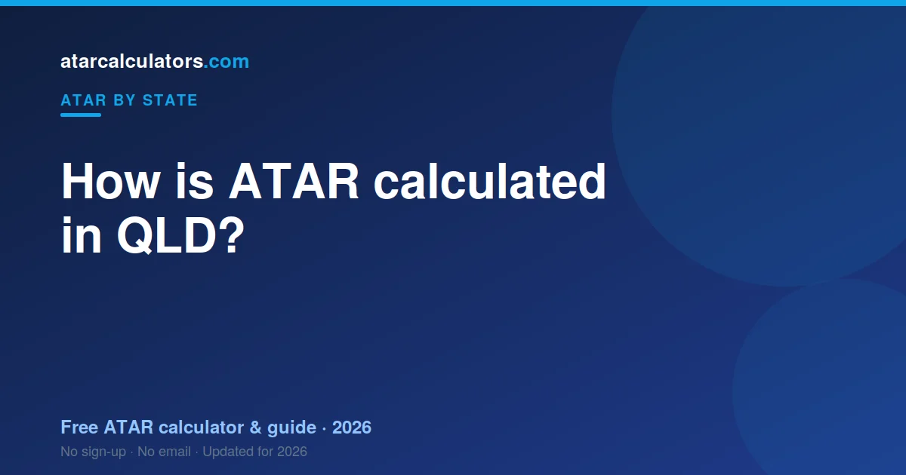

In Queensland, your ATAR is worked out by QTAC from your scaled QCE subject results. QTAC scales each subject result, takes your best five, and ranks that total against your age group to give an ATAR from 0.00 to 99.95. QCAA sets the subjects and runs the assessment; QTAC turns those results into your ATAR. Queensland moved from the OP system to the ATAR in 2020.
Key takeaways
- Your QLD ATAR is a rank from 0.00 to 99.95, not an average of your results.
- It is built from your best five scaled subject results.
- You must complete an English subject to be eligible, though it need not be in your best five.
- QTAC scales your results and works out your ATAR. QCAA sets and runs the assessment.
- Each General subject result is mostly internal assessment plus an external exam.
- Queensland switched from OP to ATAR in 2020.
- The same ATAR is used by universities across Australia, not just Queensland.

A rank, not a mark
The most important thing to know is that your ATAR is a rank. An ATAR of 85 does not mean you scored 85%. It means you finished ahead of about 85% of your age group.
Because it is a rank, it lets universities compare students who took completely different subjects. That is the whole point of the ATAR.
What the QCE is
The QCE is the Queensland Certificate of Education, the Year 12 qualification in Queensland. Subjects are set and assessed by QCAA, the Queensland Curriculum and Assessment Authority.
You finish with a result in each subject. Those results are the raw material for your ATAR, but they are not your ATAR. That comes next.
How your subject result is built
For a General subject, most of your result comes from internal assessments across the year, set at your school and confirmed by QCAA. The rest comes from an external exam, written and marked by QCAA.
For most subjects the external exam is worth about a quarter of your result. For maths and science subjects it is worth half. So your work across the year carries real weight, long before the exam.
How QTAC scaling works
Once you have your subject results, QTAC scales them. Scaling adjusts each subject so that the same result means the same thing across subjects.
A subject scales up when the students taking it are strong across all their subjects. It scales down when the group is broader. Your position within the subject never changes — scaling only changes how the result counts towards your ATAR.
Your best five results form your ATAR
QTAC takes your best five scaled results and combines them into a Tertiary Entrance Aggregate. The eligible inputs are your best five General subjects, or your best four General subjects plus one Applied subject, or your best four General subjects plus a completed VET qualification at Certificate III or above.
Your strongest five do all the work. Anything beyond five does not count, so a spare subject is a useful safety net rather than a boost.
The English requirement
To be eligible for an ATAR in Queensland, you must satisfactorily complete an eligible English subject, which means a grade of C or better in one of English, Literature, English as an Additional Language, English and Literature Extension, or Essential English. This applies to everyone, and only a General English subject or Essential English can be counted, not both.
However, your English result only counts towards your ATAR if it is among your best five. So English is required for eligibility, but it does not have to be one of your top five results.
ATAR eligibility in Queensland
An ATAR in Queensland is not automatic; you have to meet specific eligibility rules set by QTAC on behalf of the Queensland universities. Understanding them early shapes your subject choices, because a gap in eligibility can stop an ATAR that your results alone would have produced. There are two parts: a valid combination of subjects for the aggregate, and the English requirement that sits over the top.
The eligible subject combinations
Your Tertiary Entrance Aggregate is built from one of three combinations: your best five scaled General subject results; your best four scaled General subjects plus one Applied subject; or your best four scaled General subjects plus a completed VET qualification at Certificate III or above. In every case the aggregate rests on at least four General subjects, with the fifth input being another General subject, an Applied subject, or a VET qualification. This is why most ATAR-track students study a full set of General subjects, usually six, so their best five have room to be strong.
| Combination | Inputs |
|---|---|
| Five General | Best five scaled General subject results |
| Four General + Applied | Best four scaled General subjects plus one Applied subject |
| Four General + VET | Best four scaled General subjects plus a completed VET qualification at Certificate III or above |
At least four General subjects underpin every eligible combination. Check the current rules with QTAC.
The English requirement in full
To be eligible for an ATAR you must satisfactorily complete an eligible English subject, meaning a grade of C or better in one of English, Literature, English as an Additional Language, English and Literature Extension, or Essential English. The requirement applies to every ATAR-eligible student. Note the rule that a General English subject and Essential English cannot both be counted toward the aggregate; you choose one path. And English only counts toward your ATAR if it is among your best five scaled results, so it is an eligibility gate rather than a guaranteed contributor to the aggregate.
English is an eligibility gate. Even a student with five strong non-English subjects is not ATAR-eligible without a C or better in an eligible English subject. Make sure your English result clears the bar.
Precluded subjects and combinations
QTAC applies precluded-subject rules so that closely overlapping subjects do not both count at full value toward the aggregate. The clearest example is English: only a General English subject or Essential English may be included, not both. Similar rules apply to some closely related subject pairs. The practical effect is the same as elsewhere: check the current precluded list before finalising your subjects, so your load gives QTAC the full set of countable results you expect rather than two overlapping subjects that collapse into one.
A worked example
Say you take English, Maths Methods, Biology, Business and Physical Education. QTAC scales each result and takes your best five.
It combines them into a total, then compares that total with every other student’s. If it sits higher than 88% of them, your ATAR is about 88.00. Your strongest results do the heavy lifting.
Who does what in Queensland
Two bodies are involved, and it helps to keep them straight. QCAA runs the QCE: it sets the subjects, runs the assessment, and gives you your results. QTAC takes those results, scales them, and works out your ATAR.
So QCAA gives you your QCE. QTAC gives you your ATAR. We cover QTAC in detail in QTAC explained.
From OP to ATAR
Queensland used to use the OP, or Overall Position, a band from 1 to 25. It moved to the ATAR in 2020, bringing it into line with the rest of the country.
So if an older sibling talks about their OP, that system is gone. Every Queensland student now receives an ATAR. See ATAR vs OP vs ENTER for the history.
Adjustment factors and your selection rank
The ATAR QTAC calculates is not always the figure a course compares against its cut-off. For selection, universities often use a selection rank, which is your ATAR plus any adjustment factors you qualify for. Adjustment factors are applied after the ATAR is calculated, so they never change your ATAR itself; they lift the rank a course sees. Two students with the same ATAR can therefore have different selection ranks for the same course, and a published course ATAR is really a selection-rank threshold.
Educational access schemes
The main adjustment route is the Educational Access Scheme, which recognises circumstances that may have affected your study, such as financial hardship, illness, or disruption. Eligible students can receive adjustment factors that raise their selection rank for participating courses. Some adjustments are applied automatically from information QTAC holds; others need an application with supporting evidence by a deadline. If you think your circumstances may qualify, check the scheme early, because the deadlines can fall around results time.
Subject and other adjustments
Some universities award adjustment factors for studying particular subjects relevant to a course, such as a specified mathematics or science subject, or for other schemes they run. These subject adjustments are set by each university and vary between them, so the lift available for a given subject at one university may differ at another. Because adjustments are capped, they improve your selection rank within a limit rather than without bound.
Adjustments lift the rank, not the ATAR. Your ATAR is fixed once calculated. Adjustment factors are added on top to form the selection rank a course uses, so check each university’s schemes to see what you may gain.
Pathways into university without an ATAR
About half of Queensland’s Year 12 students receive an ATAR; the rest complete the QCE through other pathways, and many still go on to university. The ATAR is the best-known route, but Queensland universities run a range of alternative pathways for students who do not have a competitive ATAR, or none at all. Knowing they exist changes how a borderline or missing rank feels, because it turns a single result into one option among several.
Tertiary preparation and enabling programs
Tertiary preparation programs and enabling courses build university-level skills and, on successful completion, provide a basis for admission. Queensland universities and their colleges run these programs, often free or low-cost, for students who want a supported start. For a capable student whose QCE results do not reflect their ability, an enabling program can be a stronger beginning than scraping into a course on a bare rank.
VET and diploma pathways
A completed vocational qualification can open a university door. A diploma can provide a basis for admission and sometimes credit toward a related degree, and a Certificate III or IV can support entry to some courses. Starting in vocational study and moving into a degree is a well-worn Queensland route, assessed on the vocational results rather than on a school ATAR.
The STAT and mature-age entry
The Special Tertiary Admissions Test, or STAT, assesses general reasoning and comprehension rather than subject knowledge, and many Queensland courses accept it as a basis for admission for non-school-leaver applicants. For mature students, the STAT, previous study, work experience and enabling programs together provide routes that do not depend on a recent QCE result. An ATAR does not expire, so an older rank can still count too.
Pathways are normal, not a fallback of last resort. With only about half of Year 12 students receiving an ATAR, pathways carry large numbers into Queensland degrees each year. If the direct route falls short, ask the university which pathway leads into your target course.
Estimate your QLD ATAR
The clearest way to see all this is to try it. Our QLD ATAR calculator applies scaling to your subject results and gives you an estimated ATAR.
An estimate is not your official result, which only QTAC can give. It shows you where you stand now, so you can set a realistic target for the rest of Year 12.
The structure of a General subject
Most students building an ATAR take General subjects. Each one is assessed in four parts: three internal assessments across the year, set at your school, and one external exam at the end, set by QCAA.
So your result in a General subject is built mostly across the year, with the exam as the final piece. This means the work you do in Year 12, long before the exam, carries real weight towards your result.
How internal assessment is quality-assured
Queensland does not rank-moderate internal marks the way some states do. Instead, your school marks your internal assessments against QCAA’s published standards, and QCAA reviews and confirms that marking to keep it consistent across the state.
So your internal result reflects your work against a set standard, not just your position in your class. Strong, consistent internal assessment is one of the most reliable ways to build a good subject result.
The external exam and its weighting
Each General subject ends with an external exam, written and marked by QCAA. For most subjects it counts for about a quarter of your result. For maths and science subjects, it counts for half.
So exam preparation matters, and it matters most in maths and science, where the exam carries more weight. Past papers under timed conditions are the most reliable way to get ready.
A fuller worked example, with five results
Say a student finishes with these subject results, which QTAC then scales: English 82, Maths Methods 85, Chemistry 88, Biology 80 and Business 78.
| Subject | Result | Counts in your best 5? |
|---|---|---|
| Chemistry | 88 | Yes |
| Maths Methods | 85 | Yes |
| English | 82 | Yes (and meets eligibility) |
| Biology | 80 | Yes |
| Business | 78 | Yes (fifth result) |
QTAC scales each result, takes the best five, and combines them into a total. That total is ranked against every student to give the ATAR.
Applied subjects and VET in your ATAR
Your best five results do not all have to be General subjects. Within set limits, you can include one Applied subject or a completed VET qualification among your five.
This gives you flexibility. A student who is strong in an applied or vocational area can have that count towards their ATAR, alongside their General subjects. The rules cap how many non-General results can count, so check the details for your combination.
Subject results are not your ATAR
Students often confuse a subject result with the ATAR. They are different. A subject result describes your performance in one subject. Your ATAR is a statewide rank, from 0.00 to 99.95, built from your best five scaled results.
You can have solid subject results and an ATAR that surprises you, because the ATAR depends on scaling and on how everyone else did. Subject results describe subjects; the ATAR ranks students.
Scaling in numbers
Scaling can move a result up or down. A result in a subject with a strong cohort might scale up, while the same result in a broad-entry subject might scale down. QTAC does this so every subject can be compared fairly.
This is why two students with the same raw results can end up with different ATARs. What matters is not just your result, but how the subject scales and how you performed within it.
Why you cannot calculate it exactly yourself
There is no formula you can run at home for your exact ATAR. It depends on how every other student in Queensland performs, and on the exact scaling for that year. Both are only known once all results are finalised.
This is why calculators give an estimate: they apply scaling to your results, which is close but not the final figure. See how accurate ATAR calculators are.
How many subjects should you take?
Your ATAR is built from your best five scaled results, so you need at least five eligible subjects, including an English subject for eligibility. Most students take six, which is a smart safety net.
An extra subject means one poor result can drop out of your best five without sinking your ATAR. It costs some effort across the year, but the protection it gives your rank is usually worth it.
From OP to ATAR: what changed
The switch changed how finely students are ranked. The OP had just 25 bands, while the ATAR runs from 0.00 to 99.95 in small steps, so it separates students far more precisely than the old system did.
For you, this means small differences in your results can matter more than they once would have. There is also no exact one-to-one conversion between an old OP and an ATAR, so if you see an OP-to-ATAR table, treat it as a rough guide only. See ATAR vs OP vs ENTER for the full story.
Inter-subject scaling, explained properly
The step most Queensland students find hardest to picture is inter-subject scaling, so it is worth slowing down. When QCAA sends QTAC your raw subject results, those results are not yet comparable across subjects, because the same raw score in two subjects can represent very different levels of achievement relative to the students who took each one. Inter-subject scaling is the process QTAC uses to convert raw results into scaled results, expressed on a 100-point scale to two decimal places, so that a scaled score in one subject means the same as a scaled score in another.
The logic is comparative. A subject scales up when the students taking it are strong across all their subjects, and it scales down when the cohort is broader. Importantly, scaling never changes your position within your own subject; if you were the top student in a subject, you remain the top student after scaling. What scaling changes is how your result counts toward your aggregate relative to other subjects. QTAC states plainly that inter-subject scaling will neither enhance nor diminish a student’s performance in their subjects; it only makes results comparable.
Your rank within a subject is untouched. Scaling moves the whole subject on the common scale; it does not reorder students within a subject. A strong result stays a strong result.
Why scaling is iterative
Scaling in Queensland is not a single pass but an iterative calculation overseen by a technical committee each year. The process looks at how the students in each subject performed across all their subjects, adjusts the subjects accordingly, then repeats until the figures stabilise. This is why the exact scaling for a year is not known until after results, and why QTAC publishes a detailed ATAR report each year rather than a fixed scaling table in advance. Any pre-results estimate of a subject’s scaling is informed guesswork based on past reports.
For students, the practical takeaway is simple: you cannot reliably predict a subject’s scaling before results, so you should not choose subjects on scaling alone. The published reports show past patterns, which a calculator can use to estimate, but the current year’s figures emerge only once the whole cohort’s results are in.
The QTAC calculation, step by step
It helps to see the whole calculation as an ordered sequence. First, QCAA adds together your Units 3 and 4 results at the completion of each subject to form your overall raw subject result. Second, QCAA provides those raw results, and any completed VET qualifications, to QTAC. Third, QTAC runs the inter-subject scaling process, converting raw results into scaled results on the common 100-point scale. Fourth, QTAC adds your best five scaled results, from the eligible inputs, into a Tertiary Entrance Aggregate. Fifth, students are placed in descending order of merit by aggregate, and sixth, they are assigned to ATAR bands, with the top students receiving 99.95 and the scale stepping down in intervals of 0.05.
| Step | What happens |
|---|---|
| 1 | QCAA combines your Units 3 and 4 results into an overall raw subject result. |
| 2 | QCAA sends raw results and completed VET qualifications to QTAC. |
| 3 | QTAC runs inter-subject scaling to produce scaled results. |
| 4 | QTAC adds your best five scaled results into a Tertiary Entrance Aggregate. |
| 5 | Students are ranked in descending order of aggregate. |
| 6 | Students are assigned to ATAR bands, from 99.95 down in steps of 0.05. |
Adjustment factors, where they apply, are added after the ATAR is calculated to form a selection rank.
From aggregate to ATAR
The Tertiary Entrance Aggregate is not itself the ATAR; it is the score QTAC ranks. Because the ATAR is a rank against the whole Queensland Year 12 age cohort, the same aggregate can map to a slightly different ATAR from year to year depending on how all students performed. QTAC assigns students to 0.05-wide bands across the range, so an ATAR reports your position in the cohort rather than your aggregate directly. The direction is constant, though: a higher aggregate always ranks ahead of a lower one in the same year.
Internal assessment and the external exam
For a General subject in Queensland, your overall result is built across Units 3 and 4, the two summative units of Year 12, and combines internal assessment with an external examination. Most General subjects have three internal assessments plus one external exam, with the external exam typically worth about a quarter of the result. For many mathematics and science subjects the external exam is worth half, reflecting the nature of those subjects. The internal assessments are set at your school and confirmed through QCAA’s processes, while the external exam is written and marked by QCAA.
The balance matters for how you work. Because internal assessment carries most of the weight in most subjects, consistent performance through the year builds your result long before the exam. In the mathematics and science subjects where the exam is worth half, strong exam preparation becomes correspondingly more important. Either way, both halves feed the raw subject result that QCAA sends to QTAC for scaling.
How internal assessment is kept fair
A common worry is that internal assessment set at different schools cannot be compared fairly. QCAA addresses this through quality-assurance processes, including confirmation of internal assessment marks, so that an internal result at one school means the same as the equivalent result at another. This happens before QTAC scales anything, so the raw subject results QTAC receives are already quality-assured across schools. Scaling then handles comparability across subjects, a separate problem from comparability across schools.
Two different fairness problems. QCAA’s confirmation keeps assessment comparable across schools; QTAC’s scaling keeps results comparable across subjects. Both are needed, and they happen at different stages.
How Applied subjects and VET count
Queensland’s system deliberately lets an Applied subject or a completed VET qualification stand in for one General subject in the aggregate, so that students on more vocational pathways are not shut out of an ATAR. The rule is that at least four of your five aggregate inputs must be General subjects; the fifth can be an Applied subject or a completed VET qualification at Certificate III or above. Applied subjects and VET qualifications are brought onto the common scale so they can be compared with General subjects, within the limits QTAC sets.
This matters for subject planning. A student combining strong General subjects with a Certificate III can still earn an ATAR, with the VET qualification counting as the fifth input if it is among their best results after scaling. But because only one non-General input can count, a student cannot build an aggregate mostly from Applied subjects or VET; the core must be General subjects. If you are combining a vocational qualification with your QCE and hoping it lifts your ATAR, check in advance how it will count and be scaled.
One non-General input, not more. Your aggregate rests on at least four General subjects. An Applied subject or a Certificate III or above can be the fifth, but it cannot replace the General core.
Numeric values behind VET and Applied results
To bring Applied subjects and VET onto the scale, QTAC assigns numeric equivalents to letter grades before scaling, commonly treating an A as 90, a B as 70, a C as 50, a D as 30 and an E as 10. These numeric equivalents give a starting point that scaling then adjusts for comparability. The detail is technical, but the implication is practical: a strong letter grade in an Applied subject or a solid VET result carries a meaningful value into the aggregate, provided it is among your best inputs.
From OP to ATAR: what changed
Until 2019, Queensland ranked students with the Overall Position, or OP, a band from 1 to 25, where 1 was the highest. The OP was underpinned by the Queensland Core Skills Test, a common test all OP-eligible students sat, which was used to scale school results. In 2020 Queensland issued its first ATARs, bringing the state into line with the rest of the country and replacing the OP’s 25 bands with the finer ATAR scale from 0.00 to 99.95 in steps of 0.05. The Queensland Core Skills Test was discontinued, and inter-subject scaling took over the role of making results comparable.
The change was more than cosmetic. The ATAR is a far finer rank than the OP’s 25 bands, and it is nationally comparable, so a Queensland student’s rank now means the same as the same rank interstate. For families who remember the OP, the key mental switch is that a low number was good under the OP but a high number is good under the ATAR, and that there is no simple one-to-one conversion between the two systems.
| Feature | OP (to 2019) | ATAR (from 2020) |
|---|---|---|
| Scale | 1 to 25 (1 best) | 0.00 to 99.95 (99.95 best) |
| Comparability | Queensland only | National |
| Scaling basis | Queensland Core Skills Test | Inter-subject scaling |
| Calculated by | QCAA predecessor | QTAC |
There is no exact OP-to-ATAR conversion; the systems rank differently.
Why the national rank matters
Moving to the ATAR means a Queensland student can apply interstate using the same rank, without translating an OP into another system. A Queensland ATAR of 90 means the same standing as a Victorian or New South Wales ATAR of 90, even though each state builds its aggregate differently. For students, the upshot is that you need to understand Queensland’s method, because that is how your own ATAR is built, and to know that the result travels nationally once QTAC has calculated it.
Turning your estimate into a plan
Once you understand how the ATAR is built, an estimate becomes a planning tool. Enter your current results, see your estimated rank, and compare it with the cutoff for your course. That gap is your target for the rest of the year.
Re-run the estimate as real results come in. As they replace predictions, the number sharpens, and you can see which subjects are moving your rank the most.
QTAC compared with the other admissions centres
Every state and territory has a tertiary admissions centre, and they work in much the same way: collect applications, apply their system’s scaling and aggregate rules, calculate the ATAR, and run offer rounds. QTAC covers Queensland. New South Wales and the ACT use UAC, Victoria uses VTAC, South Australia and the Northern Territory share SATAC, and Western Australia uses TISC. The ATAR itself is national, so a rank calculated by QTAC means the same as the same rank from any other centre.
What differs is the machinery. Each centre applies its own certificate, subjects, aggregate rules and scaling. Queensland uses the QCE, a best-five aggregate with the option of one Applied or VET input, and inter-subject scaling. Western Australia, by contrast, uses a best-four aggregate with subject bonuses. The end result in every case is a position on the one national ATAR scale, built by different rules in each state.
| Centre | Covers |
|---|---|
| QTAC | Queensland |
| UAC | New South Wales and the ACT |
| VTAC | Victoria |
| SATAC | South Australia and the Northern Territory |
| TISC | Western Australia |
All centres produce the same national ATAR scale from their own state’s results and rules.
Applying across state borders
If you want to study interstate, you generally apply through the admissions centre for the state where the university sits, using your QTAC-calculated ATAR as your rank. Many students apply through QTAC for Queensland courses and through another centre for courses elsewhere, running two separate applications. Each centre has its own fees, deadlines and preference rules, so treat them as independent processes and check both calendars.
Because the ATAR is nationally comparable, you do not need a different rank for each state; the same ATAR travels with you. What you do need is to meet each course’s own prerequisites and any state-specific requirements, which can differ even for similar degrees.
A short guide for parents and carers
If you are supporting a student through Year 12 in Queensland, a few points make the system easier to follow. QCAA runs the QCE: it sets the subjects, runs the assessment and reports results. QTAC takes those results, scales them, and calculates the ATAR and runs university applications. The two work together, but the ATAR and the application process are QTAC’s part, and queries about a subject result go to QCAA.
The most useful thing to understand is that the ATAR is a rank, not a mark. It reports where a student sits relative to their age group, not a percentage of questions answered correctly. A student can work hard, earn solid subject results, and still receive an ATAR that looks lower than those results because of how ranking, scaling and the best-five rule work. That is normal and is not a sign of failure.
It also helps to know that the ATAR is one route among many. With only about half of Year 12 students receiving an ATAR, pathways such as tertiary preparation programs, VET and the STAT carry large numbers into Queensland degrees. Encouraging a student to list a realistic spread of preferences, and to know the pathways exist, takes pressure off results day.
Where to turn. QTAC can answer questions about applications, offers and the ATAR; QCAA about the QCE and subject results; and the school’s careers adviser about subject choices and pathways. You do not have to work it out alone.
A rough timeline through Year 12
Through the year, students complete internal assessments across Units 3 and 4 and sit external exams. Applications through QTAC open well before results, so students register preferences while finishing the year, and some receive early offers. In mid-December QCAA releases subject results and QTAC releases ATARs; offer rounds follow in December and January. Exact dates shift, so check QTAC’s published key dates rather than last year’s calendar.
Common myths about the Queensland system
Several beliefs about the Queensland system mislead students every year. The first is that the ATAR is a mark out of 100. It is not; it is a rank. An ATAR of 85 means you are ranked near the top 15 per cent of your age group, not that you earned 85 per cent. Mistaking the rank for a percentage leads students to misread both their own result and a course’s cut-off.
The second myth is that all your subjects count. In Queensland only your best five scaled results form your aggregate, so a weak sixth subject can simply drop out. The third myth is that you should chase subjects that scale up; scaling rewards a strong result, and a strong result is easier in a subject that suits you, so chasing a high-scaling subject you struggle in usually backfires.
The fourth myth is that the ATAR is the only way into a Queensland university. With about half of Year 12 students not receiving an ATAR, pathways such as tertiary preparation programs, VET and the STAT carry many into the same degrees. Treating the ATAR as the single door creates needless pressure and hides the routes that help when a rank falls short.
Rank, not mark. If you remember one thing about the ATAR, make it this: it reports where you sit relative to your age group, which is why it can look different from your subject results.
Common mistakes to avoid
A few errors come up every year, and all are avoidable. Treating an estimate as a result is the first: a calculator gives a range built on assumptions about scaling that QTAC has not published, so plan around a band, not a number. Listing too few preferences is the second: a student with only a dream course and nothing below it has no safety net if the cut-off rises. Missing the English requirement or a prerequisite is the third: neither is rescued by a high ATAR, so check both early. And missing a QTAC deadline, especially a preference-change deadline before an offer round, is the one error that can cost a place outright.
A plain-language glossary
The Queensland system uses a handful of terms worth knowing. Keeping them straight makes every other explanation easier to follow.
| Term | What it means |
|---|---|
| QTAC | The Queensland Tertiary Admissions Centre, which scales results, calculates the ATAR and runs university applications. |
| QCAA | The Queensland Curriculum and Assessment Authority, which runs the QCE and reports subject results. |
| QCE | The Queensland Certificate of Education, the Year 12 qualification. |
| General subject | A subject with external assessment whose scaled result can count toward the ATAR. |
| Applied subject | A more practical subject; one Applied subject can be the fifth input in the aggregate. |
| Units 3 and 4 | The two summative Year 12 units whose combined result forms your raw subject result. |
| Inter-subject scaling | QTAC’s process of converting raw results into scaled results so subjects can be compared. |
| Scaled result | A subject result after scaling, on a 100-point scale to two decimal places. |
| Tertiary Entrance Aggregate | The sum of your best five scaled results, which QTAC ranks into an ATAR. |
| ATAR | The Australian Tertiary Admission Rank, from 0.00 to 99.95 in steps of 0.05. |
| Selection rank | Your ATAR plus any adjustment factors, which a course compares against its cut-off. |
| OP | The Overall Position, Queensland’s former rank from 1 to 25, replaced by the ATAR in 2020. |
A checklist before results day
A short checklist keeps the process under control. Before results, make sure your QTAC application is lodged with a realistic spread of preferences, first choice first. Check that you have at least four strong General subjects plus a valid fifth input, a C or better in an eligible English subject, the prerequisites for your target courses, and no surprise precluded combinations. Note the key dates for results, offers and preference deadlines. Know which pathways apply to your preferred courses in case your ATAR falls short. With those in place, results day is about reading an outcome, not scrambling to react to one.
Putting it all together
QTAC’s job is to turn your QCE results into a fair, nationally comparable rank and, with the universities, to run the application and offer process for Queensland. It applies inter-subject scaling so subjects can be compared, adds your best five scaled results into a Tertiary Entrance Aggregate, ranks that aggregate against the Year 12 cohort to assign your ATAR, and the universities add any adjustment factors to form your selection rank. Understanding each step turns a confusing process into a sequence you can plan for.
The practical takeaways are simple. Choose subjects you can do well in, keep at least four strong General subjects plus a valid fifth input, meet the English requirement with a C or better in an eligible subject, and watch for precluded combinations. Check your target courses’ prerequisites early. Lodge your QTAC application on time with a realistic spread of preferences, first choice first, and revise it when your real ATAR arrives. And remember the pathways, so a disappointing ATAR is a detour rather than a dead end.
Where to start now
Begin with your target courses. List the ones you are seriously considering, check their prerequisites and recent cut-offs, and confirm your subjects satisfy them and that you are on track for a C or better in an eligible English subject. Then note QTAC’s key dates for applications, preference changes, results and offers. Draft a preference list that spreads across your likely ATAR range, with your genuine first choice at the top. Identify the pathways into your target courses in case your rank falls short. With those in place, the rest of the process unfolds in a predictable order, and results day becomes a step you have prepared for rather than a moment you dread.
A full worked example, start to finish
Imagine a student who takes six General subjects and sits all their external exams. QCAA combines each subject’s Units 3 and 4 results into a raw subject result and sends six raw results to QTAC. QTAC runs inter-subject scaling, producing six scaled results on the 100-point scale. Suppose the scaled results come out as 82.40, 78.15, 75.60, 71.30, 68.90 and 55.20. QTAC takes the best five, which are everything except the 55.20, and adds them into a Tertiary Entrance Aggregate. The weakest subject simply drops out, because the student had a sixth subject to spare.
That aggregate is then ranked against every other Queensland Year 12 student’s aggregate, and the student is assigned an ATAR band accordingly. The exact ATAR depends on how the whole cohort performed, which is why the same aggregate can map to a slightly different ATAR in different years. If the student later qualifies for adjustment factors through the Educational Access Scheme or a subject adjustment, those are added to the ATAR to form a selection rank, which is what each course compares against its cut-off.
The example shows the system’s logic in one picture: scale for comparability, take the best five, rank against the cohort, and add adjustments at the end. Each step has a clear purpose, and none of them is a mystery once you see where it sits in the sequence.
The spare subject earned its place. Because the student took six subjects, the weakest scaled result dropped out of the best five. That is exactly why a broad load protects you against one underperforming subject.
What this means for choosing subjects
Put together, the process points to a simple strategy. Take an English you can do well in, since it is required for eligibility. Add subjects you are strong in, because your best five carry your ATAR. Include a high-scaling subject only if you can score well in it.
Then take a sixth subject as a buffer, so one weak result can drop out. Do that, and the machinery of scaling and your best five works in your favour rather than against you.
Common questions
How many subjects do you need for a QLD ATAR?
Your ATAR is built from your best five scaled results. You need at least five eligible subjects, which can be five General subjects or a mix including an Applied subject or a VET qualification, within set limits.
Is English compulsory for the QLD ATAR?
You must complete an English subject and meet a literacy standard to be eligible for an ATAR. However, your English result only counts towards your ATAR if it is among your best five.
Who calculates the QLD ATAR?
QTAC, the Queensland Tertiary Admissions Centre, calculates the QLD ATAR. QCAA sets the subjects and runs the assessment, and QTAC scales those results and works out your ATAR.
How does QCE scaling work?
QTAC scales each subject based on how strong the students taking it are across all their subjects. A strong cohort scales a subject up; a broader one scales it down. Your position within the subject never changes.
What is the maximum QLD ATAR?
The highest possible ATAR is 99.95, the same across Australia. Ranks below 30.00 are usually reported as “less than 30”.
How is internal assessment marked in Queensland?
Your school marks internal assessments against QCAA’s published standards, and QCAA reviews and confirms that marking for consistency. Queensland does not rank-moderate internal marks the way some other states do.
Can Applied subjects or VET count towards my QLD ATAR?
Yes, within set limits. Your best five results can include one Applied subject or a completed VET qualification, alongside your General subjects, so a strong vocational area can count towards your ATAR.
Who calculates the ATAR in Queensland?
QTAC, the Queensland Tertiary Admissions Centre, calculates and issues the ATAR on behalf of Queensland’s universities. QCAA runs the QCE and provides your subject results to QTAC.
What is the difference between QCAA and QTAC?
QCAA runs the QCE: it sets the subjects, runs the assessment and reports your results. QTAC scales those results and calculates your ATAR. One is the curriculum authority, the other the admissions centre.
How is the Queensland ATAR calculated?
QCAA sends your scaled-ready Units 3 and 4 results to QTAC, which runs inter-subject scaling, adds your best five scaled results into an aggregate, and ranks that aggregate into an ATAR from 0.00 to 99.95.
What is the best five rule?
Your ATAR is built from your best five scaled results: five General subjects, or four General plus one Applied subject, or four General plus a completed VET qualification at Certificate III or above.
Does every subject count toward my ATAR?
No. Only your best five scaled results count. Anything beyond five does not add to your aggregate, so a sixth subject is a safety net rather than a boost.
What is inter-subject scaling?
The process QTAC uses to convert raw subject results into scaled results on a common 100-point scale, so results in different subjects can be compared fairly. It does not change your rank within a subject.
Why is scaling needed?
Because the same raw result in two subjects can represent different levels of achievement relative to each subject’s students. Scaling puts subjects on a common footing so your rank does not depend on which subjects you chose.
Does scaling change my position in a subject?
No. Scaling moves the whole subject on the common scale but never reorders students within a subject. If you were top of your subject, you stay top after scaling.
Can I predict my scaling?
Only roughly. QTAC does not publish the current year’s scaling before results, and the process is iterative, so any estimate is informed guesswork based on past ATAR reports.
Is the ATAR a mark out of 100?
No. It is a rank. An ATAR of 85 means you finished ahead of about 85 per cent of your Queensland Year 12 age cohort, not that you scored 85 per cent.
What is the highest Queensland ATAR?
The highest ATAR is 99.95, reported in steps of 0.05. In recent years about 37 Queensland students have achieved the maximum each year.
Is a Queensland ATAR the same as interstate?
Yes. The ATAR is a national rank, so a Queensland ATAR calculated by QTAC means the same standing as the same ATAR from any other state’s admissions centre.
When did Queensland start using the ATAR?
Queensland issued its first ATARs in 2020, replacing the Overall Position, or OP, and bringing the state into line with the national ATAR system.
What was the OP?
The Overall Position was Queensland’s former rank, a band from 1 to 25 where 1 was highest. It was replaced by the ATAR in 2020 and relied on the now-discontinued Queensland Core Skills Test.
Is there an OP-to-ATAR conversion?
There is no exact one-to-one conversion, because the OP’s 25 bands and the ATAR’s fine scale rank differently. The ATAR is a far more granular, nationally comparable rank.
What is the English requirement for an ATAR?
You must satisfactorily complete an eligible English subject, meaning a grade of C or better in English, Literature, English as an Additional Language, English and Literature Extension, or Essential English.
Does my English result count toward my ATAR?
Only if it is among your best five scaled results. English is required for eligibility, but it does not have to be one of your top five contributors to the aggregate.
Can I count both English and Essential English?
No. Only a General English subject or Essential English can be included in the ATAR, not both. You count one English pathway toward your aggregate.
What is the QCE?
The Queensland Certificate of Education is the Year 12 qualification, set and assessed by QCAA. Your QCE subject results are the raw material QTAC scales to calculate your ATAR.
Is the QCE the same as the ATAR?
No. The QCE is the certificate QCAA awards for meeting its requirements; the ATAR is the rank QTAC builds from your scaled subject results. You can complete the QCE without an ATAR.
How is a General subject result built?
From internal assessment set at your school and confirmed by QCAA, plus an external exam written and marked by QCAA. The external exam is usually about a quarter of the result, or half for many maths and science subjects.
How much is the external exam worth?
For most General subjects the external exam is worth about 25 per cent of the result; for many mathematics and science subjects it is worth 50 per cent. The rest comes from internal assessment.
What are Units 3 and 4?
The two summative units of Year 12 in a General subject. Your results in Units 3 and 4 are combined by QCAA into your overall raw subject result, which QTAC then scales.
Can VET count toward my ATAR?
Yes. A completed VET qualification at Certificate III or above can be the fifth input in your aggregate, alongside at least four General subjects, once brought onto the common scale.
Can an Applied subject count toward my ATAR?
Yes. One Applied subject can be the fifth input in your aggregate, alongside at least four General subjects. At least four General subjects must underpin the aggregate.
How many subjects should I take for an ATAR?
Most ATAR-track students take six General subjects so their best five have room to be strong. At least four General subjects are needed, plus a fifth General, Applied or VET input.
Does a spare subject boost my ATAR?
No. Only your best five scaled results count, so a sixth subject does not add to your aggregate. It acts as a safety net in case one of your other results is weaker.
What is a Tertiary Entrance Aggregate?
The Tertiary Entrance Aggregate, or TEA, is the sum of your best five scaled results. QTAC ranks every student’s aggregate to assign ATARs.
Does QTAC mark my exams?
No. QCAA sets and marks the assessment and reports your results. QTAC scales those results and calculates your ATAR; it does not mark your work.
Where can I see how my ATAR was built?
QTAC reports your ATAR through your QTAC account, and publishes a detailed ATAR report each year explaining scaling and the calculation. Your scaled results underpin your aggregate and ATAR.
Is QTAC the same as QCAA?
No. QCAA runs the QCE: it sets the subjects, runs assessment and reports results. QTAC scales those results, calculates the ATAR and runs applications. They are separate bodies with separate jobs.
Who do I contact about a subject result?
QCAA. It sets and runs the assessment and handles queries about subject results. QTAC calculates the ATAR from those results, so result queries go to QCAA.
Who do I contact about my ATAR?
QTAC. It calculates the ATAR and runs applications and offers, so questions about your ATAR, scaling, preferences and offers go to QTAC.
Does QCAA calculate the ATAR?
No. QCAA produces the subject results; QTAC scales them and calculates the ATAR. The two bodies work in sequence, with QCAA first and QTAC second.
What does QCAA stand for?
QCAA stands for the Queensland Curriculum and Assessment Authority, the body that sets and runs the QCE subjects and assessment and reports results.
What does QTAC stand for?
QTAC stands for the Queensland Tertiary Admissions Centre, a not-for-profit owned by Queensland universities that scales results, calculates the ATAR and processes university applications.
Can QTAC change a subject result?
No. QTAC uses the subject results QCAA produces. If you believe a subject result is wrong, use QCAA’s processes; QTAC recalculates the ATAR from any corrected result.
Does QTAC run the exams?
No. QCAA sets and marks the external exams and runs the assessment. QTAC uses the resulting subject results to calculate the ATAR.
What is the relay between QCAA and QTAC?
QCAA runs the QCE and produces subject results from Units 3 and 4; QTAC scales those results, builds the aggregate and ranks it into an ATAR. QCAA hands over, QTAC converts.
Do I deal with both bodies?
Usually you interact mainly with QCAA through your school for the QCE, and with QTAC for your ATAR and university applications. Each handles its own part of the process.
Which body awards my certificate?
QCAA awards the QCE. QTAC does not award a certificate; it calculates your ATAR and manages applications.
Can I query my ATAR calculation?
The ATAR follows mechanically from your scaled results. If you think a subject result is wrong, query it with QCAA; QTAC recalculates from any corrected result. QTAC can explain how the ATAR was built.
Does QCAA set university prerequisites?
No. The universities set prerequisites, and QTAC publishes them. QCAA runs the subjects that satisfy them.
Can I get the QCE without an ATAR?
Yes. You can meet the QCE requirements without the eligible subject combination or English result needed for an ATAR. About half of Year 12 students complete the QCE without an ATAR.
Can I get an ATAR without the QCE?
An ATAR is built from scaled subject results, but universities generally expect the QCE for school-leaver entry. In practice you work toward both together.
Does QCAA handle my university application?
No. QCAA runs the QCE; QTAC handles university applications and offers. You apply through QTAC, not QCAA.
What is a General subject versus an Applied subject?
General subjects have external assessment and produce scaled results that can count toward the ATAR in the best five. Applied subjects are more practical; one can be the fifth aggregate input.
Can Applied subjects count for university?
An Applied subject can be the fifth input in your aggregate alongside four General subjects, and can support some pathways. Check which courses accept Applied subjects for prerequisites.
How many General subjects do I need for the QCE?
The QCE has its own completion requirements set by QCAA, separate from the best-five rule for the ATAR. Check QCAA’s QCE requirements, and take at least four General subjects for a full aggregate.
Does QCAA publish scaling?
No. Scaling is applied by QTAC and is not published before results. QCAA reports subject results; QTAC scales them and calculates the ATAR, publishing an annual ATAR report.
Who runs the external exams?
QCAA sets and marks the external exams. QTAC uses the resulting subject results, which combine the exam and internal assessment, to calculate the ATAR.
Can I contact QTAC during the year?
Yes. QTAC has an enquiries service for questions about applications, offers and the ATAR. Check its website for current contact details.
Does QCAA decide my ATAR eligibility?
QCAA runs the QCE and reports results; QTAC applies the ATAR eligibility rules and calculates the ATAR. ATAR eligibility depends on meeting QTAC’s subject and English requirements.
What if QCAA and QTAC information seem to differ?
They cover different parts of the process, so check QCAA for the QCE and subject results and QTAC for the ATAR and applications. If something is unclear, contact the relevant body directly.
Which body do schools deal with?
Schools deal with QCAA for the curriculum, subjects and assessment, and help students with QTAC applications. Careers advisers bridge both for subject choice and university entry.
Is there overlap between QCAA and QTAC?
They work in sequence rather than overlap: QCAA produces results, QTAC converts them into a rank and runs admissions. Understanding the handover makes the system clearer.
How many applications does QTAC process?
QTAC processes a large volume of applications each year on behalf of Queensland universities, running the shared application and offer system for the state.
Who owns QTAC?
QTAC is a not-for-profit organisation owned by Queensland universities, set up to run a shared admissions process rather than have each university handle applications alone.
What is the clearest way to picture the two bodies?
QCAA runs the subjects and awards the QCE; QTAC turns the results into an ATAR and an offer. One is the curriculum and assessment authority, the other the admissions centre.
What is a good ATAR in Queensland?
A good ATAR depends on the course you want, since cut-offs vary. Broadly, an ATAR above 80 opens many courses, and competitive courses require more. Compare your target course’s recent cut-off rather than chasing a number.
What ATAR do I need for most courses?
Many Queensland courses have cut-offs in the 70s, and some guaranteed-entry schemes admit lower, with prerequisites. Competitive courses require higher. Check each course’s recent cut-off.
Is 70 enough for a Queensland university?
An ATAR of 70 meets the entry level for a range of courses, including some guaranteed-entry schemes, provided you meet prerequisites. Higher-demand courses require more.
What ATAR do I need for medicine or law?
Highly competitive courses such as medicine and law require high ATARs and often extra steps such as tests or interviews. Check each university’s current requirements, which can change year to year.
Does a higher ATAR always mean more options?
Yes, broadly, because a higher rank meets more cut-offs. But prerequisites still apply, so a high ATAR does not replace a course’s specific subject requirements.
Can I get into a course below its listed cut-off?
Sometimes, through adjustments that lift your selection rank above your ATAR, or through a pathway. The listed cut-off is a selection-rank threshold, and adjustments can bridge a small gap.
What if my ATAR is in the 60s?
Some courses and guaranteed-entry schemes are open in that range, and pathways such as tertiary preparation and VET broaden your options. Check which courses and pathways suit your rank.
Is an ATAR below 50 useful?
It can still support some pathways and later study, and an ATAR does not expire. Many students with lower ATARs enter university through tertiary preparation programs, VET and the STAT.
How do I know what my target course needs?
Check the course’s most recent cut-off, published through QTAC and the university, plus its prerequisites and any extra requirements such as a portfolio or interview. Use the cut-off as a guide.
Does the cut-off include adjustments?
A published cut-off is usually a selection rank, so it already reflects the point at which selection ranks, including adjustments, reached the last place. Your own selection rank is what is compared against it.
Can I rely on last year’s cut-off?
Use it as a guide, not a promise. Cut-offs move year to year with demand and places, so build a spread of preferences rather than banking on a single figure.
What if two courses have the same cut-off?
Then choose by fit: structure, campus, prerequisites and where each leads. The cut-off tells you about demand, not about which course suits you better.
Is a course with a low cut-off worse?
No. A low cut-off reflects supply and demand, not quality. Many excellent courses have modest cut-offs because they have places available or lower applicant numbers.
How competitive are the top Queensland universities?
Cut-offs vary by course, and some are highly competitive. Rather than judging a university as a whole, compare the specific course’s recent cut-off.
Do all Queensland universities have similar cut-offs?
Cut-offs vary by course more than by university. The same field can have different cut-offs at different universities, so compare specific courses rather than universities overall.
Can adjustments get me over a cut-off?
Adjustment factors lift your selection rank and can help you reach a cut-off. They are capped, so they bridge a small gap rather than a large one.
What ATAR gives the most choice?
A higher ATAR meets more cut-offs, so broadly the higher your rank the more courses are open, subject to prerequisites. But the right course for you may not need the highest rank.
Should I aim for a specific ATAR number?
Aim for the courses you want, then work out the rank and prerequisites they need. Chasing a round number is less useful than targeting your actual course’s requirements.
What ATAR is considered high in Queensland?
An ATAR in the 90s is high, placing you in the top tenth of your age cohort, and opens competitive courses. In recent years more than a fifth of Queensland ATAR recipients scored 90 or above.
Does a good ATAR guarantee my first choice?
Not by itself. You also need to meet prerequisites, and high-demand courses can have extra steps. List your first choice first and meet all its requirements.
Can I improve a borderline ATAR?
Before results, focus effort on your best five subjects. After results, adjustments, pathways and later study can bridge a borderline rank. A borderline ATAR is workable, not final.
How do I benchmark my estimate?
Compare your estimate band with the recent cut-offs of your target courses. If they sit inside your band, they are realistic reaches; if above your ceiling, lean on pathways and safety options.
Does a good ATAR matter after first year?
Rarely. Once you are enrolled and progressing, university results matter more than your ATAR, and transfers are based on university performance. The ATAR mainly opens the first door.
Is there a minimum ATAR for university?
Many courses set a minimum selection rank, and some guaranteed-entry schemes admit at a set rank with prerequisites, but pathways admit students below that. There is no single statewide minimum; it depends on the course.
What ATAR do guaranteed-entry schemes need?
Guaranteed-entry schemes set their own selection ranks, with prerequisites still required. Check each scheme’s current rank and conditions through QTAC and the university.
Can I get a good ATAR with Applied or VET inputs?
Yes. A strong set of four General subjects plus a solid Applied or VET input can produce a good ATAR. Strength in your best five scaled results is what counts most.
How much does one strong subject move my ATAR?
A strong scaled result among your best five raises your aggregate directly. The exact effect on your ATAR depends on your other results and how the cohort performed.
Does a good ATAR depend on my subjects?
It depends on your scaled results, which depend on how well you do relative to each subject’s cohort. Good subject choices help, but strong results in subjects that suit you matter most.
Where do I compare Queensland ATAR benchmarks?
The good-ATAR-in-QLD and QLD cut-offs guides set out benchmarks by course, and QTAC and the universities publish current cut-offs. Use these rather than a single remembered number.
Is a good ATAR the same across states?
Because the ATAR is national, a given ATAR means the same standing everywhere. What counts as good for a course depends on that course’s cut-off, which varies by state and university.
How does a VET qualification count toward my ATAR?
A completed VET qualification at Certificate III or above can be the fifth input in your aggregate, alongside at least four General subjects, once brought onto the common scale. Only one non-General input can count.
Can I build my whole ATAR from VET?
No. At least four of your five aggregate inputs must be General subjects. A VET qualification can be the fifth input, but it cannot replace the General core.
What VET level counts for the ATAR?
A completed VET qualification at AQF Certificate III or above can count as the fifth aggregate input. Lower-level qualifications do not count toward the aggregate, though they may support pathways.
Does an incomplete VET qualification count?
No. The VET qualification must be completed to count as the fifth aggregate input. An incomplete qualification does not contribute to the aggregate, though it may still support a pathway.
How is a VET qualification scaled?
QTAC brings a completed VET qualification onto the common scale so it can be compared with General subjects, assigning it a value that scaling adjusts. The detail is technical; the effect is that strong VET can count meaningfully.
Can an Applied subject and VET both count?
Your fifth input is one non-General result: either one Applied subject or one completed VET qualification, alongside four General subjects. You do not count both a VET qualification and an Applied subject as separate fifth inputs.
Does a Certificate IV count more than a Certificate III?
Both a completed Certificate III and a higher qualification can serve as the fifth aggregate input. How each is valued on the scale is set by QTAC; check the current treatment for your qualification.
Can VET help me meet prerequisites?
Some courses accept a VET qualification for entry or as a pathway, and some prerequisites can be met through related study. Check each course, as prerequisites may specify General subjects.
Is VET a good option for an ATAR?
It can be, especially if you are strong in a vocational area, because a completed Certificate III or above can be a solid fifth input. Weigh the time it takes against the General subjects it might replace.
Can I do a school-based apprenticeship and an ATAR?
Yes, many students combine a school-based apprenticeship or traineeship with General subjects. A completed VET qualification can be the fifth aggregate input. Plan the load with your school.
Does VET count the same as a General subject?
A completed VET qualification can be the fifth input, but the aggregate’s core must be four General subjects. VET is scaled to be comparable, but it cannot form the majority of the aggregate.
What is an Applied subject?
An Applied subject is a more practical senior subject. One Applied subject can be the fifth input in your aggregate alongside four General subjects, scaled to be comparable.
Can Applied subjects be in my best five?
One Applied subject can be the fifth input in your best five, alongside four General subjects. You cannot count two Applied subjects toward the aggregate.
Is Essential English an Applied subject?
Yes. Essential English is an Applied subject and an eligible English subject for the requirement. Remember only a General English subject or Essential English counts toward the aggregate, not both.
Can I take mostly Applied subjects and get an ATAR?
No. At least four General subjects must underpin the aggregate, so a student taking mostly Applied subjects would not have the General core needed for an ATAR. Plan for four strong General subjects.
Do universities value VET entry?
Universities offer VET and diploma pathways and value the skills they build. A completed qualification can provide a basis for admission and sometimes credit, separate from counting toward an ATAR.
Can a diploma get me straight into second year?
Sometimes. A related diploma can provide credit toward a degree, potentially shortening it. Credit is assessed by the university once you are admitted; ask about it for your course.
Is VET a backup or a genuine pathway?
A genuine pathway. Many students enter Queensland universities through VET and diploma routes and do well. It is a legitimate route to the same degrees, not merely a fallback.
How do I combine VET with an ATAR plan?
Take at least four strong General subjects plus an eligible English subject, and let a completed Certificate III or above serve as your fifth input. Plan the timetable with your school so the VET is completed in time.
Does VET affect my eligibility for the English requirement?
No. You still need a C or better in an eligible English subject regardless of VET. The English requirement applies to every ATAR-eligible student, including those using a VET input.
Can I count VET from outside school?
A completed VET qualification at Certificate III or above, including some completed outside school, may count as the fifth input. Check with QTAC how an external qualification is treated.
What if my VET qualification finishes late?
To count toward your ATAR, the VET qualification must be completed in time for QTAC’s calculation. Plan the completion date with your training provider and school.
Does VET scaling change each year?
Like subjects, the way VET is brought onto the scale reflects the calculation each year. Check QTAC’s current information, and do not assume a fixed value for a qualification.
Can VET lower my ATAR?
A VET input counts only if it is among your best five eligible results, so it generally helps or is set aside rather than lowering your aggregate, provided you have four strong General subjects.
Is an ATAR with VET worth the same?
Yes. An ATAR that includes a VET input is the same national rank as any other ATAR. The combination used to build it does not change what the ATAR means.
Should I choose VET for scaling reasons?
Choose VET because it suits your strengths and goals, not for scaling. A strong completed qualification can be a solid fifth input, but your four General subjects carry the core of the aggregate.
Can VET meet English competency?
The ATAR English requirement is a C or better in an eligible English subject, which VET does not replace. Separately, some diplomas can meet university English requirements for entry; check the course.
How do I know if my VET counts?
Check with QTAC and your school whether your specific qualification, at Certificate III or above and completed in time, counts as the fifth aggregate input. The rules can be specific.
Is combining VET and General subjects common?
Yes. Many Queensland students combine General subjects with a VET qualification, using the completed qualification as the fifth aggregate input. It is a well-established approach.
Where can I learn how VET counts?
QTAC’s ATAR information explains how Applied subjects and completed VET qualifications count toward the aggregate. Your school and training provider can advise on your specific qualification.
Does QTAC handle interstate applicants?
Yes. QTAC assesses applications from students who did not complete the QCE, including interstate and international applicants, recognising an ATAR earned elsewhere or assessing another qualification.
Is my interstate ATAR recognised in Queensland?
Yes. The ATAR is national, so an ATAR earned in another state is recognised at Queensland universities. You apply through QTAC, which uses your interstate ATAR for entry.
Do I need to recalculate my ATAR for Queensland?
No. The ATAR is nationally comparable, so the same ATAR applies in Queensland. You simply apply through QTAC using the rank you have.
Can I apply to Queensland from another country?
International students have their own routes and requirements; some apply through QTAC and some directly to universities. Check QTAC’s and the universities’ international information.
How does QTAC treat the IB?
Students completing the International Baccalaureate can apply through QTAC, and an IB result can be converted to an ATAR or assessed for entry. Check the current conversion and requirements.
Does an IB score map to an ATAR?
Yes. There is a published conversion from the IB score to an ATAR, so IB students receive a comparable rank. The conversion is set each year; check the current table.
Can I use an overseas qualification?
QTAC can assess some overseas qualifications for entry to Queensland universities. The treatment depends on the qualification, so check with QTAC about what it needs from you.
Can I apply to Queensland and interstate at once?
Yes. Apply through QTAC for Queensland courses and through the relevant interstate centre for courses there. The applications are separate, but your ATAR is recognised by both.
Does applying interstate cost more?
Each admissions centre has its own fees. Check the fees for QTAC and for any other centre you apply through.
What if I moved to Queensland during Year 12?
Contact QTAC and your school early. How your study is assessed depends on where you completed your subjects and which certificate you hold. QTAC can advise on your situation.
Can mature-age students apply without an ATAR?
Yes. Mature applicants can be assessed on the STAT, previous study, work experience and tertiary preparation programs, not only on a school ATAR. Contact QTAC and the universities.
Does an old Queensland ATAR still count?
Yes. An ATAR does not expire, so a past ATAR can still be used, often alongside more recent study for mature applicants. Check how the university weighs it.
How do non-school leavers apply?
Non-school leavers apply through QTAC, listing their preferences, and are assessed on their qualifications, the STAT, work experience or tertiary preparation programs. QTAC and the universities can advise.
Can I enter university after working for years?
Yes. Work experience, the STAT, previous study and tertiary preparation programs all provide routes for applicants returning after time in the workforce. An older ATAR can also still count.
Do I need the QCE if I am a mature applicant?
Not always. Many courses admit mature applicants on other bases, such as the STAT, previous tertiary study or a qualification, rather than requiring a recent QCE. Check the course.
Can a Certificate IV get me into a Queensland university?
A Certificate IV can provide a basis for admission or a pathway into a related degree, and with other requirements can meet entry for some courses. Check each course’s requirements.
What is a tertiary preparation program?
A structured course that builds university-level skills and provides a basis for admission. Queensland universities and colleges run them, often free or low-cost, for students who need a supported start.
Do regional Queensland students get extra help?
Access schemes often recognise rural and remote location, adding to the selection rank, and universities offer support. Check each university’s scheme and whether you must apply.
Can I apply through QTAC from a remote community?
Yes. QTAC applications are online, and support is available through schools and university outreach. Check the access schemes that may apply to remote applicants.
What if I have a disability or medical condition?
The Educational Access Scheme may recognise circumstances that affected your study, lifting your selection rank, and universities provide support services. Check the scheme’s criteria and how to apply with evidence.
Do access schemes guarantee a place?
No. They lift your selection rank, improving your chance against the cut-off, but a place still depends on meeting the rank, prerequisites and any other requirements, and on places being available.
How do I apply for the Educational Access Scheme?
Some adjustments apply automatically from information QTAC holds; others need an application with evidence by a deadline. Check the scheme’s requirements and deadlines early.
Is the process different for homeschooled students?
Homeschooled students need the eligible QCE study QTAC uses to build an aggregate, which usually means enrolment in eligible subjects. Check with QCAA and QTAC about eligibility and assessment.
Can I transfer from an interstate university to a Queensland one?
Yes. Tertiary transfer based on university study is common. You apply through QTAC, and the Queensland university assesses your university results rather than only your ATAR. Ask about credit.
Does QTAC assess work experience?
For some pathways and mature applications, relevant work experience can form part of the basis for admission, often alongside the STAT. Check the specific pathway’s requirements.
Can I use a partial qualification?
A partial or incomplete qualification may contribute to a pathway or to credit, depending on the course. Check with the university how it treats incomplete study.
What if my situation is unusual?
Contact QTAC and the universities directly. They assess a wide range of backgrounds, and the enquiries team can tell you which basis of admission suits your situation.
Can international students use QTAC pathways?
Some pathways are available to international students, with their own requirements. Check QTAC’s and the universities’ international information for how to apply and which pathways apply.
Does an interstate student get Queensland prerequisites waived?
No. Prerequisites apply regardless of where you studied. An interstate applicant must still meet a course’s prerequisites, met through equivalent subjects or a bridging option. Check with the university.
Where do I start as a non-standard applicant?
Start with QTAC’s information for non-school-leaver and interstate applicants and contact the universities offering your preferred courses, who can advise on the right basis for admission.
What is the single most important thing to know about the QLD ATAR?
That it is a rank built from your best five scaled results, calculated by QTAC from QCAA’s subject results. Understanding scaling and the best-five rule lets you plan your subjects and effort.
Is a high ATAR the only way into a Queensland university?
No. With about half of Year 12 students not receiving an ATAR, pathways such as tertiary preparation, VET and the STAT carry many into university. The ATAR is central but one route among several.
What is the best strategy for choosing subjects?
Choose subjects you can do well in, meet your target courses’ prerequisites, include an eligible English subject, take six General subjects so your best five have room, and watch for precluded combinations.
Should I pick subjects that scale well?
No. Scaling rewards a strong result, which is easier in a subject that suits you. Chasing a high-scaling subject you struggle in usually lowers your aggregate. Choose for strength, not reputation.
How do I avoid a costly mistake?
List a realistic spread of preferences, meet the English requirement and prerequisites early, watch for precluded combinations, and note QTAC’s deadlines, especially preference-change deadlines before offer rounds.
What if I am not sure which course I want?
List the courses you are considering in order of preference and keep your options open. QTAC matches you to the highest you qualify for, so you do not have to commit to one up front.
How do I estimate my ATAR during the year?
Use a Queensland-specific calculator that applies inter-subject scaling and the best-five rule, with realistic results. Treat the result as a range, since scaling is not published in advance.
Why does my calculator estimate differ from my ATAR?
A calculator estimates scaling, which QTAC does not publish before results, and you may have entered results that differ from your finals. The official ATAR is the one that counts.
Which subjects move my estimate most?
Usually your stronger subjects among your best five. A calculator lets you test this by changing one subject at a time and watching the estimate move.
Should I drop a subject I am weak in?
Not necessarily. If you take six subjects, a weak one may drop out of your best five. Dropping it only helps if it frees time for subjects that will count.
Does taking six subjects help?
It can, by giving QTAC a stronger best five to choose from, so a weaker result can drop out. It helps only if you can keep the sixth subject reasonably strong.
How important are the external exams?
Important, especially in maths and science where the exam is worth half. Even in subjects where it is worth about a quarter, the exam is part of your result, so prepare consistently.
Can I improve my ATAR by repeating a year?
Repeating can change the results QTAC draws on, within the accumulation and best-five rules. Whether it raises your ATAR depends on your results; seek advice first.
Does a gap year hurt my application?
No. Your ATAR stays valid, and you can apply the following year using the same rank, sometimes with new credentials. A gap year does not disadvantage your study.
How do I compare two courses’ cut-offs?
Look at each course’s most recent cut-off and remember it can shift. Use it as a guide, place your preferences across your likely range, and rank by what you want most.
Is a higher cut-off a better course?
Not necessarily. A high cut-off reflects demand and limited places, not quality. Choose a course for its fit with your goals, not just its rank.
What is the safest way to list preferences?
List your most-wanted course first, then realistic options across your likely ATAR range, and include a safer or guaranteed-entry option low on the list. QTAC offers your highest qualifying preference.
Will a safety option cost me my top choice?
No. QTAC makes you the best offer it can from your ordered list, so a safety option lower down never displaces a higher preference you qualify for.
Can I update preferences after I see my ATAR?
Yes, up to the deadline before an offer round. This is exactly when to adjust, replacing estimates with choices based on your real ATAR.
What should I do on results day?
Read your ATAR, compare it with your preferences’ cut-offs, and update your preferences before the deadline if needed. Then wait for the offer round.
What if my ATAR is below every cut-off?
Use later rounds, adjust to realistic and guaranteed-entry preferences, and pursue pathways such as tertiary preparation, VET and the STAT. A low ATAR is a detour, not a dead end.
Can I still study my dream course eventually?
Often yes, through a pathway or transfer if the direct ATAR route misses. Plan a realistic sequence with the university rather than treating one result as final.
Does a low ATAR limit my future?
No. Pathways, transfer and later study mean a low ATAR need not limit where you end up. Many graduates entered through routes other than a high Year 12 rank.
How do I keep perspective on results?
Remember the ATAR ranks one year of study against your age group, and that Queensland has pathways for when it falls short. It matters for admission but does not define your ability.
What is the most common regret students report?
Often, not listing enough preferences or not knowing the pathways existed. Both are avoidable with a little planning before results day.
Do employers care about my ATAR?
Mostly no, beyond the degree it helped you enter. Once you have a qualification and experience, the ATAR rarely features in employment. It is an admissions tool.
Should I tell people my ATAR?
That is your choice. Your ATAR is private unless you share it, and there is no obligation to disclose it to anyone beyond your applications.
How do I handle exam stress?
Prepare consistently, use your school’s support, and remember the best-five rule forgives a weaker result and that pathways exist. Steady work and perspective help more than cramming.
Where can I get tailored advice?
QTAC, the universities’ admissions staff and your school’s careers adviser can give advice for your specific situation, which is more reliable than general rules of thumb.
What should I do first after reading this?
List your target courses, check their prerequisites and the English requirement, confirm your subjects meet them, note QTAC’s key dates, and plan a realistic spread of preferences.
How does QTAC run offers in rounds?
QTAC releases offers in stages: major rounds in December and January, then further rounds for remaining places and later applicants. Each round matches applicants to the highest preference they qualify for.
Why are offers made in rounds?
Rounds let QTAC fill places as applicants accept, decline or change preferences. The main rounds handle most school leavers; later rounds fill remaining places and late or adjusted applications.
Can I get a better offer in a later round?
Yes. If a place opens in a higher preference, a later round can bring it. Keeping your preferences updated lets you benefit from later rounds.
Do I lose my place if I wait?
In most cases you can accept an offer and still be considered for a higher preference in a later round. Read the offer’s conditions to confirm.
How many rounds are there?
There are major rounds in December and January, then several later rounds. The exact number and dates are published by QTAC each year.
What happens if I decline an offer?
Declining frees your place. You can still be considered for other preferences in later rounds, but understand the consequences before declining a firm offer.
Can I accept and then change my mind?
You can usually update preferences for later rounds even after accepting, and once enrolled you can transfer internally. Contact the university about your options.
What if no round makes an offer?
Consider pathways such as tertiary preparation, VET and the STAT, and reapply next cycle if needed. Your ATAR does not expire, so later entry remains open.
Do all universities make offers in the same round?
QTAC runs the shared rounds, so offers across Queensland universities come through the same process. Some universities also make early offers before the main rounds.
Can I hold two offers?
You may receive offers across different rounds. Respond to the one you want by its deadline. In most cases accepting one does not stop a higher preference arriving later.
What is a major offer round?
A main round of offers after ATARs are released, where most school leavers who will get an offer receive one. Queensland has major rounds in December and January.
When are the major rounds?
The major rounds fall in December and January, after the ATAR release. QTAC confirms the exact dates each year, so check its key dates.
Can I apply between rounds?
You can lodge or adjust an application for later rounds up to their deadlines. Check QTAC’s key dates for when each round’s preferences close.
Do later rounds have higher or lower cut-offs?
Cut-offs can shift between rounds as places fill. Some courses may have slightly different thresholds in later rounds depending on remaining places and demand.
Is the first offer the best I will get?
Not necessarily. In most cases you can accept it and still be considered for a higher preference later, so the first offer is usually a floor, not a ceiling.
How do I respond to an offer?
Respond through QTAC or the institution as the offer specifies, by its deadline, then enrol with the university. Follow the instructions in the offer carefully.
What if I miss an offer-response deadline?
You risk losing the offer. Note each offer’s response deadline and respond in time. If you miss it, contact the university promptly to ask about your options.
Can I defer after accepting?
Many courses allow deferral so you can start the following year. Check the course’s deferral policy and apply through the university after accepting.
Do early offers count as a round?
Early offers are made before the main rounds, outside the standard rounds, often conditional on completing the QCE. They do not replace the main rounds; you may still be considered for other preferences.
What happens to my other preferences after I accept?
In most cases you remain in consideration for higher preferences in later rounds unless you withdraw. Lower preferences generally fall away once you hold a higher offer.
Can I add a preference after the main round?
You can usually adjust your preferences for later rounds up to their deadlines, including adding a course. Check the deadlines for each round.
Does accepting an offer cost anything?
Accepting is part of the enrolment process with the university, which involves tuition and other fees. The QTAC application fee is separate and covers the application process.
How soon must I enrol after accepting?
Enrolment timelines are set by the university. Accept by the offer deadline, then follow the university’s enrolment steps within the period it specifies.
What if I want a course in a later round only?
List it among your preferences, and if a place opens in a later round you can receive it. Keep your preferences updated so you are in the running.
Can I apply to a course that filled in the main round?
If places open in later rounds, you may still receive an offer. If a course is full, consider alternatives and pathways, and reapply next cycle if needed.
Do I respond to QTAC or the university?
Respond through the process the offer specifies and enrol with the university. QTAC runs the offer; the university handles enrolment once you accept.
Can my preferences carry to next year?
Applications are tied to an admissions cycle. If you apply again next year, check what carries over and what you need to resubmit.
What if my circumstances change between rounds?
Update your preferences and contact the university if needed. If a new circumstance affects your eligibility for an access scheme, check its rules and deadlines.
Is there support if I am unsure during rounds?
Yes. QTAC’s enquiries service and the universities’ admissions staff can help you understand offers and rounds. Your careers adviser can also guide your decisions.
Where do I track the offer rounds?
On QTAC’s website, which publishes the current year’s offer-round dates and deadlines. Rely on these rather than last year’s calendar.
Can parents help with a QTAC application?
Yes, with the practical steps, while keeping the account and decisions the student’s. Help check details, preferences and deadlines, and keep records in one place.
How can parents best support a Year 12 student?
Understand that the ATAR is a rank, not a mark, encourage a realistic spread of preferences, know the pathways exist, and help the student track QTAC’s deadlines. Support beats pressure.
Should parents help choose subjects?
Parents can help by discussing strengths, prerequisites and the English requirement, but the choice should reflect the student’s abilities and goals. A careers adviser can provide balanced guidance.
What if my child’s ATAR disappoints us?
Treat it as a detour, not a dead end. Later rounds, adjustments and pathways such as tertiary preparation, VET and the STAT lead into the same degrees. Help plan the next step calmly.
How do I explain scaling to my child?
Explain that scaling puts different subjects on a common footing so the rank does not depend on which subjects they chose, and that a strong result matters more than a subject’s reputation.
Should we rely on the calculator’s number?
Treat it as a range, not a promise, because scaling is not published before results. Use it to see which subjects move the estimate most and to plan preferences, not to fix expectations on one number.
How involved should parents be on results day?
Be present and calm. Help read the ATAR, compare it with the preferences’ cut-offs, and check whether to update preferences before the deadline. Then let the process run.
What if my child wants a very competitive course?
Support listing it first, meeting its requirements, and adding realistic options below. If the cut-off is beyond reach, help identify a pathway or transfer route into the same field.
Is it worth paying for ATAR tutoring?
That is a family decision. Targeted help in a student’s weaker counted subjects can lift results, but broad wellbeing and consistent study matter too. Focus any help where it moves counted subjects.
How do parents find reliable information?
QTAC’s website for applications and the ATAR, QCAA for the QCE, and the universities’ course pages. These are updated yearly and are more reliable than older guides or forums.
Should we visit university open days?
Yes. Open days help the whole family judge course fit beyond the cut-off, so the preference list reflects courses the student genuinely wants.
What if my child is set on one university only?
Encourage listing courses, not just a university, and including options across universities as a safety net. QTAC matches to the highest preference qualified for, so breadth protects the student.
How do I help with the English requirement?
Make sure your child is on track for a C or better in an eligible English subject, since it is an eligibility gate. Check early, because missing it affects ATAR eligibility entirely.
What if my child wants to take a gap year?
That is fine. The ATAR does not expire, and the student can apply the following year, sometimes with new credentials. A gap year does not disadvantage later study.
Should parents track the deadlines?
Sharing responsibility for the key dates helps, since a missed preference-change or offer-response deadline is one of the few avoidable setbacks. Note them together early.
How do I support a child entering through a pathway?
Treat the pathway as a legitimate route, not a lesser one. Many pathway students do as well as ATAR entrants. Encourage engagement with the program and its support services.
What if siblings compare ATARs?
Discourage direct comparison, since what matters is whether each student’s rank and requirements meet their own goals. Different courses need different ranks.
Can parents attend information sessions?
Schools and universities run information sessions for parents and students, and QTAC provides materials aimed at families. Attending helps you support the student’s decisions.
How do I keep the year calm at home?
Keep perspective: the ATAR is one rank that mainly opens the first door, with pathways available. Support steady study and wellbeing, and avoid turning every result into a verdict.
What if my child misses a prerequisite?
Help find a bridging or tertiary preparation route, or a pathway, and contact the university about options. A missing prerequisite is a problem to solve, not a closed door.
Should we accept the first offer?
Read it with the student. In most cases they can accept it and still be considered for a higher preference later, so the first offer is usually a floor, not the final word.
How do I talk about a low ATAR?
Acknowledge the disappointment, then focus on the next step: later rounds, adjustments and pathways. A low ATAR is a low rank in one year, not a measure of ability or future.
What role does the careers adviser play?
A careers adviser helps with subject choice, prerequisites, preferences and pathways, bridging QCAA’s and QTAC’s parts of the process. Encourage the student to use this support.
How do I support a mature-age family member applying?
Point them to QTAC’s non-school-leaver information and the universities’ pathways. The STAT, previous study, work experience and tertiary preparation programs all provide routes beyond a recent ATAR.
What if we disagree about course choice?
Encourage the student to list genuine preferences while discussing options openly. The choice should reflect the student’s goals; QTAC’s ranked list lets them keep several options alive.
Is it normal to feel anxious about the ATAR?
Yes, and perspective helps. The ATAR mainly opens the first door, and pathways exist for when it falls short. Preparation and realistic preferences reduce the anxiety.
How do I know my child is prepared?
They have lodged a QTAC application with a realistic spread of preferences, met or planned for the English requirement and prerequisites, know their pathways, and have the key dates noted.
What is the best thing a parent can do?
Stay calm and informed, support steady work and wellbeing, help track deadlines, and keep perspective that the ATAR is one route among several. Your steadiness helps most.
How do I explain the best-five rule?
Say that only the student’s five strongest scaled subjects count, so a weaker sixth subject can drop out, which is why a broad load protects them and a single weak result need not sink the aggregate.
Where should families start?
With the student’s target courses: their prerequisites, the English requirement and recent cut-offs, then QTAC’s key dates and a realistic preference plan. Everything else follows from there.
Does QTAC apply to all Queensland universities?
QTAC processes admissions for Queensland’s universities. Some private or specialist providers have their own routes, so check whether a provider uses QTAC or applies directly.
Can I apply to a Queensland university directly instead of through QTAC?
For undergraduate school-leaver entry, QTAC is the main route for Queensland’s public universities. Some pathways and international applications apply directly, so check the specific course.
Does QTAC cover postgraduate study?
QTAC processes many applications, but some postgraduate applications are made directly to the university. Check the university for postgraduate entry.
Can I apply to study part-time through QTAC?
QTAC handles the admission; the university sets study-load options. Apply through QTAC for the course, then discuss part-time or flexible study with the university at enrolment.
Does QTAC handle VET or TAFE applications?
QTAC processes many tertiary applications, including some diploma and TAFE courses. Check whether your specific VET or TAFE course is through QTAC or the provider directly.
Can international students use QTAC?
International students have their own routes and requirements; some apply through QTAC and some directly to universities. Check QTAC’s and the universities’ international information.
Does QTAC assess credit for prior study?
QTAC handles the admission; credit for prior study is assessed by the university once you are admitted. Ask the university about credit for a prior qualification or university study.
Can I apply for midyear entry?
Some Queensland courses offer midyear entry with their own application timelines, sometimes through QTAC and sometimes directly. Check the course for midyear options and how to apply.
Can I apply to Queensland universities as an interstate school leaver?
Yes. You apply through QTAC using your interstate ATAR, which is nationally comparable. Some universities also accept direct conditional applications; check each one.
Does QTAC charge an application fee?
Yes. QTAC charges an application fee for the process, which can vary by applicant type and timing. Check the current fees on QTAC’s website when you apply.
Can I get a fee concession?
Check QTAC’s current information for any concessions. Separately, the Educational Access Scheme addresses study circumstances through adjustments, not application fees.
Does QTAC handle scholarships?
Scholarships are offered and administered by the universities and other bodies, not through the core QTAC application. Apply for scholarships through the relevant provider.
Can I change my personal details with QTAC?
Yes. Update your personal and contact details in your QTAC account so offers and notifications reach you. Keeping details current is important around results and offers.
Can I withdraw my QTAC application?
Yes. You can withdraw if you decide not to proceed. Contact QTAC or use your account, and consider the timing relative to offer rounds before withdrawing.
Does QTAC keep my data private?
Your application details and ATAR are private to you, shared with institutions only as part of your application. Keep your login secure and review QTAC’s privacy information.
Can someone apply on my behalf?
The application is yours, though your school or family can help you complete it. QTAC deals with you as the applicant; keep your login secure.
Does QTAC offer an enquiries service?
Yes. QTAC has an enquiries service for questions about applications, offers and the ATAR, with contact details on its website.
Can I apply if I am repeating Year 12?
Yes. You can apply through QTAC and accumulate results within the five-year window under the rules. Discuss timing with your school, since repeating affects which results QTAC draws on.
What if I studied partly interstate and partly in Queensland?
Contact QTAC early. How your study is assessed depends on the certificates and results you hold. QTAC can advise on combining interstate and QCE study for an application.
Can I apply with a mix of qualifications?
Yes. QTAC assesses a range of bases for admission, including an ATAR, a VET qualification, the STAT or an interstate or overseas result. Provide evidence of each qualification you rely on.
Does QTAC help with course information?
QTAC maintains course information with entry requirements, which you use to build your preferences. For detailed course content, check the universities’ own pages.
Can I search courses before applying?
Yes. QTAC’s course search lets you explore Queensland courses and their requirements before you lodge an application. Use it to plan your preference list.
What if a course I want is not listed?
It may be offered outside the QTAC process, be postgraduate, or have its own route. Check the university directly for how to apply to that specific course.
Does QTAC confirm my application was received?
Yes. QTAC acknowledges applications through your account. Check that your application and preferences are recorded correctly, and keep confirmation for your records.
Can I apply early and still finish Year 12?
Yes. Applications open before results, so you apply while finishing Year 12 and refine your preferences later. Some universities also make early offers in this period.
Where do I manage my whole application?
Through your QTAC account, where you lodge and track your application, manage preferences, and receive offers. It is the central place for your university admission in Queensland.
Can I apply to both a university and a diploma course?
Through QTAC you can often list both university and some diploma or pathway courses in your preferences. Check which courses are available through QTAC when you build your list.
Does QTAC run open days?
Open days are run by the individual universities, not QTAC. QTAC provides the application process and admissions information; the universities showcase their courses and campuses.
How do I decide between Queensland universities?
Compare the specific courses you want: their structure, prerequisites, campus, support and where they lead. The QTAC application lets you keep several in one ranked list, so you need not decide up front.
What is the single best source on QTAC?
QTAC’s own website and admissions materials, with QCAA for the QCE and the universities for course detail. They are updated each year and are the reliable sources.
Does QTAC calculate scaled results or does QCAA?
QTAC calculates the scaled results from the raw subject results QCAA provides. QCAA runs the subjects and assessment; QTAC applies inter-subject scaling and builds the ATAR.
What is a raw subject result?
Your overall result in a subject, combining your Units 3 and 4 internal assessment with the external exam, as reported by QCAA to QTAC before scaling.
How are raw results converted to scaled results?
Through inter-subject scaling, which QTAC runs iteratively to produce scaled results on a 100-point scale to two decimal places, so subjects can be compared fairly.
Does every General subject have an external exam?
Yes. General subjects include an external examination set and marked by QCAA, worth about a quarter of the result for most subjects and half for many maths and science subjects.
What are the numeric values for letter grades?
For bringing Applied subjects and VET onto the scale, QTAC assigns numeric equivalents to letter grades, commonly A as 90, B as 70, C as 50, D as 30 and E as 10, which scaling then adjusts.
Why does scaling use an iterative process?
Because each subject’s scaling depends on how its students performed across all their subjects, the calculation is repeated until the figures stabilise. A technical committee oversees it each year.
Can I see the scaling for my subjects?
QTAC publishes an annual ATAR report with the outcomes of inter-subject scaling after results. The current year’s scaling is not available before results, so earlier reports show past patterns.
Does scaling differ between subjects?
Yes. Different subjects scale differently depending on how their students performed, so the same raw result in two subjects can produce different scaled results. That is the point of scaling.
Can scaling lower my result?
Scaling can produce a scaled result below your raw result for a subject whose cohort was broad, and above it for a subject whose cohort was strong. It reflects comparability, not a penalty.
Does scaling reorder students within a subject?
No. Scaling moves the whole subject on the common scale but never changes your rank within your own subject. A strong result stays strong after scaling.
How many iterations does scaling take?
The process repeats until the figures stabilise; the exact number varies each year. The detail is technical, and QTAC’s reports explain the algorithm for a technical readership.
Is the scaling algorithm public?
QTAC publishes documentation on how the ATAR is calculated, including the inter-subject scaling algorithm, for a technical readership. The documents are on QTAC’s website.
What is the Best Five Subject Aggregate?
The sum of your best five scaled results, also called the Tertiary Entrance Aggregate. QTAC ranks students by this aggregate to assign ATARs.
How are students assigned to ATAR bands?
After ranking students by aggregate, QTAC assigns them to 0.05-wide ATAR bands, with the top students receiving 99.95 and the scale stepping down based on the Year 12 population.
Does the number of students affect my ATAR?
The ATAR reflects your position among the Year 12 cohort, and the bands are set based on the Queensland Year 12 population. Your rank depends on how you performed relative to that cohort.
Can my aggregate be compared across years?
Not directly, because the ATAR is re-ranked each year against that year’s cohort. The same aggregate can map to a slightly different ATAR in different years.
Why two decimal places for scaled results?
The two decimal places give precision in building the aggregate, so small differences between students are preserved before ranking. The final ATAR is then reported in 0.05 steps.
Does QTAC publish a general and a technical report?
Yes. QTAC publishes an ATAR report for a general readership summarising enrolments, scaling outcomes and band allocation, and more technical documentation on the full calculation.
Can I calculate my own aggregate?
If you know your scaled results, you can add your best five to find your aggregate. But you cannot know your scaled results before QTAC applies scaling after results.
Does the external exam affect scaling?
The external exam is part of your raw subject result, which is then scaled. Strong exam performance lifts your raw result, which can lift your scaled result, but scaling itself compares subjects, not exams.
Is internal assessment scaled too?
Your raw subject result, which combines internal assessment and the exam, is what QTAC scales. Internal assessment feeds the raw result; scaling then operates on the combined subject result.
What if an error is found in my result?
If a subject result changes through QCAA’s processes, QTAC recalculates your ATAR from the corrected result. The ATAR follows mechanically from your scaled results.
Does QTAC round my aggregate?
QTAC ranks students by aggregate and assigns ATAR bands in 0.05 steps. The aggregate itself is precise; the reported ATAR reflects your band in the ranking.
Can two students with the same subjects get different ATARs?
Yes, if their results differ, because scaling and the aggregate reflect performance. Even the same subjects produce different ATARs for students who performed differently.
Why is my scaled result not a round number?
Scaled results are expressed to two decimal places, reflecting the precision of the scaling calculation. They are rarely round numbers because they come from a statistical process.
Does QTAC use the same method every year?
The broad method, inter-subject scaling into a best-five aggregate ranked into ATAR bands, is consistent, but the scaling outcomes reflect each year’s cohort. QTAC’s reports document each year.
How does QTAC handle VET in the calculation?
A completed VET qualification at Certificate III or above is brought onto the scale and can be the fifth aggregate input alongside four General subjects, if it is among your best eligible results.
Is the calculation the same for all students?
Yes. QTAC applies the same scaling and aggregate method to all eligible students, which is what makes the ATAR a fair, comparable rank across different subject choices.
Where is the full calculation documented?
In QTAC’s publication on calculating the ATAR in Queensland, available on its website, which sets out the steps, scaling and band allocation in full for a technical readership.
What is the simplest way to picture the calculation?
QCAA gives QTAC your subject results; QTAC scales them, adds your best five into an aggregate, ranks everyone, and assigns ATAR bands from 99.95 down. That sequence is the whole calculation.
Does QTAC publish scaling before results?
No. QTAC applies inter-subject scaling after results and does not release the current year’s scaling in advance, which is why any pre-results estimate is informed guesswork based on past reports.
Can I count more than five scaled results?
No. Your aggregate uses your best five scaled results. Extra subjects give QTAC more to choose from, so a weaker result can drop out, but only five count.
Do I enrol through QTAC after accepting an offer?
No. QTAC runs applications and offers; once you accept, you enrol directly with the university. Respond to the offer by its deadline, then follow the university’s enrolment steps.
Can my selection rank differ between two Queensland courses?
Yes. Adjustment factors from schemes such as the Educational Access Scheme and subject adjustments vary by university and course, so your selection rank can differ even with the same ATAR.
What happens to a weak subject in my aggregate?
If you have more than five eligible subjects, a weak scaled result can drop out of your best five. It only counts if you have no stronger result to replace it.
Is the Queensland ATAR calculated the same for everyone?
Yes. QTAC applies the same inter-subject scaling and best-five rule to all eligible students, producing comparable ATARs on the one national scale.
Does the English requirement affect my ATAR score?
The English requirement is an eligibility gate, a C or better in an eligible English subject. English counts toward your aggregate only if it is among your best five scaled results.
Can an Applied subject be my only non-General input?
Yes. Your fifth input is one non-General result: either one Applied subject or one completed VET qualification, alongside four General subjects. Only one such input counts.
Does the ATAR include adjustment factors?
No. Your ATAR is calculated first from your scaled results, and adjustment factors are added afterward to form your selection rank. The ATAR itself does not include adjustments.
Where is the authoritative source for the QLD ATAR?
QTAC’s website and ATAR publications for the ATAR and applications, QCAA for the QCE, and the universities’ course pages. They are updated yearly and take precedence over older guides.
How do I know my subjects are eligible?
General subjects with external assessment produce scaled results for the best five; one Applied subject or a completed VET qualification at Certificate III or above can be the fifth input. Check your combination with QTAC.
Can I mix results from different years?
Yes, within the five-year accumulation window QTAC allows, with each subject counting once. Check the current rules for how results from different years combine.
What is the fastest summary of the QLD ATAR?
QCAA reports your Units 3 and 4 subject results; QTAC scales them, adds your best five into an aggregate, ranks everyone against the Year 12 cohort, and assigns your ATAR from 99.95 down.
Do I need six subjects or will five do?
At least four General subjects plus a valid fifth input are needed for a full aggregate. Most students take six General subjects so their best five have room to be strong; a spare is a safety net.
Does QTAC decide which university I get into?
No. QTAC calculates the ATAR and runs the shared application and offer process. The universities set their own cut-offs, prerequisites and adjustment schemes. QTAC matches your preferences to course offers.
Can QTAC change my subject results?
No. QCAA produces your subject results; QTAC scales them. Queries about a subject result go to QCAA, not QTAC.
What exactly does QTAC calculate?
QTAC runs inter-subject scaling on your results, adds your best five scaled results into a Tertiary Entrance Aggregate, and ranks that aggregate into your ATAR. It then matches your preferences to course offers.
Can the same aggregate give a different ATAR another year?
Yes. The ATAR is a rank against the Year 12 cohort, so the same aggregate can map to a slightly different ATAR depending on how all students performed that year.
Does a higher aggregate always mean a higher ATAR?
Within the same year, yes: a higher aggregate ranks ahead of a lower one. The exact ATAR depends on how all students’ aggregates fall that year.
What is a scaled result?
A scaled result is your subject result after inter-subject scaling, expressed on a 100-point scale to two decimal places. Your best five scaled results form your aggregate.
Is the raw result or the scaled result used?
The scaled result. Your raw subject results are scaled first, and it is the scaled results, not the raw results, that QTAC adds into your aggregate.
Can my scaled result be higher than my raw result?
Yes. A subject whose students performed strongly across their subjects can scale up, lifting the scaled result above the raw result. A subject with a broad cohort can scale down.
Does English have to be in my best five?
No. English must be satisfactorily completed for eligibility, but it only counts toward your aggregate if it is among your best five scaled results. It can sit outside your top five.
What if my English result is weak?
As long as you have a C or better in an eligible English subject, you are ATAR-eligible even if English is not among your best five. A weak English result simply may not count toward the aggregate.
Can a diploma get me into university?
A completed diploma can provide a basis for admission and sometimes credit, separate from the ATAR. Within the ATAR, a completed VET qualification at Certificate III or above can be the fifth aggregate input.
What is the STAT?
The Special Tertiary Admissions Test assesses general reasoning and comprehension rather than subject knowledge. Queensland courses accept it as a basis for admission for many non-school-leaver applicants.
Who gets an ATAR in Queensland?
QTAC calculates an ATAR for all Queensland Year 12 students who meet the eligibility requirements. In recent years about half of Year 12 students have received an ATAR, the rest completing the QCE by other pathways.
What are adjustment factors?
Extra points added to your ATAR after it is calculated, to form a selection rank. They come from schemes such as the Educational Access Scheme or subject adjustments and vary by university.
Do adjustment factors change my ATAR?
No. Adjustment factors are applied after the ATAR is calculated and lift your selection rank, not your ATAR. Your ATAR is fixed once QTAC calculates it.
What is a selection rank?
Your ATAR plus any adjustment factors. Universities compare your selection rank, not your bare ATAR, against a course’s cut-off, so the rank can be higher than your ATAR.
What is the Educational Access Scheme?
A scheme that recognises circumstances that may have affected your study, such as financial hardship or illness, and can add adjustment factors to your selection rank. Some apply automatically; others need an application.
Do all courses use adjustment factors?
Many undergraduate courses consider eligible adjustments, but the schemes and caps vary by university. Check each course and university for how adjustments apply to you.
Can adjustments push me above 99.95?
No. Adjustments lift your selection rank, not your ATAR, and the ATAR scale tops out at 99.95. Adjustments improve your rank within the scheme’s cap.
How do I apply for adjustment factors?
Some adjustments apply automatically from information QTAC holds; others need an application with evidence by a deadline. Check each scheme’s requirements early, as deadlines can fall around results.
How do I apply to a Queensland university?
You apply through QTAC, listing your course preferences in order. QTAC matches you to the highest preference you qualify for and makes offers in rounds on behalf of the universities.
Can I list preferences across different universities?
Yes. One QTAC application lets you rank courses across Queensland universities, so you do not apply to each separately. QTAC offers your highest qualifying preference.
Should I list my first choice at the top?
Yes. QTAC offers you the highest preference you qualify for, so list your genuine first choice at the top even if it is competitive, with realistic options below as a safety net.
When are Queensland ATARs released?
QTAC releases Queensland ATARs in mid-December, shortly after QCAA releases subject results. Check QTAC’s key dates for the exact day each year.
When do offers come out?
Offers follow the ATAR release, with major rounds in December and January. QTAC publishes the exact offer-round dates each year.
Can I change my preferences after seeing my ATAR?
Yes, up to the deadline before an offer round. This is exactly when to swap estimates for choices based on your real ATAR.
Do I lose an offer if I wait for a later round?
In most cases you can accept an offer and still be considered for a higher preference in a later round. Read the offer’s conditions to confirm.
What if I get no offer?
Consider later rounds, adjust your preferences, and look at pathways such as tertiary preparation programs, VET and the STAT. Missing a first-round offer is not the end of the process.
Can mature-age students apply through QTAC?
Yes. Mature applicants can be assessed on the STAT, previous study, work experience and tertiary preparation programs, as well as on an ATAR. An ATAR does not expire.
Where do I find reliable Queensland ATAR information?
On QTAC’s website and its ATAR publications, with QCAA for the QCE. They are updated each year and are more reliable than older guides or forum posts.
Is it true QTAC favours harder subjects?
No. Scaling reflects how each subject’s cohort performed across all their subjects, not a fixed difficulty rating. Harder subjects often attract strong students and scale up, but you still need a strong result.
Can I rely on a subject’s past scaling?
Only as a rough guide. Scaling reflects each year’s cohort and is not published before results, so past ATAR reports inform an estimate but do not guarantee this year’s outcome.
Will taking harder subjects raise my ATAR?
Only if you do well in them. Harder subjects often scale up because strong students take them, but a strong result is what matters. A strong result in a subject that suits you can beat a weak one in a hard subject.
Is there a way to game the ATAR?
No reliable way. Scaling and the best-five rule reward genuine strength, so there is no subject choice that inflates your ATAR without a strong result behind it. Play to your strengths.
Does dropping to easier subjects help my rank?
Not reliably. Subjects with a broad cohort tend to scale down, so a high raw result there can give a modest scaled result. Choose subjects you can do well in rather than chasing easy marks.
How much can one strong subject lift my ATAR?
A strong scaled result among your best five raises your aggregate directly. The effect on your ATAR depends on your other results and how the cohort performed.
Is wellbeing important for results?
Yes. Consistent, sustainable study feeds both internal assessment and exam performance and keeps you well enough to perform. Burnout rarely produces a student’s best results.
What if I am overwhelmed in Year 12?
Lean on your school, family and support services, and remember the structure: the best-five rule forgives a weaker result, and pathways lead to the same degrees. Ask for help early.
Does cramming work for external exams?
Consistent study generally beats cramming, because exams test understanding built over time, and in most subjects internal assessment is the larger share of your result. Steady work serves both.
Can I recover from a weak first semester?
Often yes. Your subject result combines Units 3 and 4 assessment and the exam, so a stronger second half and a good exam can lift a subject. Broad strength also protects your best five.
Should I take a subject I dislike for scaling?
Usually not. Scaling rewards a strong result, which is harder in a subject you dislike. Choose subjects you can engage with; QTAC itself advises choosing subjects you enjoy and are good at.
How do I choose between two subjects I like equally?
Use the margins: prerequisites first, then your genuine strength, then how subjects have tended to scale. If one meets a target course’s prerequisite, lean that way.
Should I compare my scaling to classmates?
Not usefully. Scaling depends on the subject and the statewide cohort, and what matters is your own best five and whether your ATAR meets your target course. Comparison rarely helps.
What is the healthiest way to think about the ATAR?
As one rank from one year that mainly opens the first university door, with pathways for when it falls short. Plan carefully, work sustainably, and keep it in proportion.
Does a balanced load hurt my ATAR?
Not if the subjects suit you. A balanced load you can perform in often gives a stronger best five than an overloaded or mismatched one. Strength across your counted subjects is what matters.
Can support services help my results?
Yes. School support, tutoring where useful, and wellbeing support all help you study consistently and perform in assessment and exams. Using support is a strength, not a weakness.
Is one bad exam the end of my ATAR?
No. One weak exam affects one subject, and the best-five rule can let that subject drop out if you have stronger results. Broad preparation protects you from a single off day.
How do I stay motivated through the year?
Keep your goal in view, break study into manageable steps, and remember that consistent effort feeds both your assessment and your exams. Sustainable habits beat last-minute pushes.
Does choosing subjects I enjoy really help?
Yes, indirectly. You work harder and perform better in subjects you enjoy, producing the strong results scaling rewards. Enjoyment and strength tend to go together.
What is the final word on scaling and strategy?
There is no shortcut that beats a strong result in subjects that suit you. Use scaling knowledge at the margins, plan around what you control, and look after your wellbeing along the way.
Can I plan my effort using the best-five rule?
Yes. Focus effort on the subjects likely to be among your best five, where improvement lifts your aggregate, rather than on a sixth subject that may not count. A calculator helps you see which subjects those are.
Does a sixth subject ever pay off?
As insurance, yes. If one of your main subjects underperforms, a strong sixth can take its place in your best five. It pays off when it protects you, not as an extra boost on top of five strong results.
Should I prioritise internal assessment or the exam?
Both, weighted by the subject. In most subjects internal assessment is the larger share; in many maths and science subjects the exam is worth half. Prepare for both according to the subject.
How do I balance several demanding subjects?
Plan your assessment calendar, spread your effort, and use your school’s support. A realistic load you can keep strong beats an overloaded one where every subject suffers.
Can I lift my ATAR late in the year?
To a degree. A strong finish to Units 3 and 4 and good exams can lift your subject results. The best-five rule means late improvement in your stronger subjects helps most.
Is it worth re-sitting to improve?
Repeating or adding study can change the results QTAC draws on, within the rules. Whether it lifts your ATAR depends on your results; weigh the time and seek advice first.
How do I keep perspective if my estimate is low?
Remember the estimate is a range, that pathways exist, and that one rank does not define you. Use a low estimate to plan realistic preferences and pathways, not as a verdict.
Does the ATAR reflect effort?
It reflects performance relative to your cohort, which effort influences but does not fully determine. Consistent effort gives you your best chance, but the ATAR is a comparative rank, not an effort score.
What should I focus on in the final months?
Your strongest subjects likely to be in your best five, consistent assessment, exam preparation, and meeting the English requirement and prerequisites. Focus where it counts toward your aggregate and eligibility.
Where can I get help if I am struggling?
Your school, teachers and wellbeing services, and your family. For the ATAR process specifically, QTAC and your careers adviser can help. You do not have to manage Year 12 alone.
Does QTAC calculate my ATAR or does the university?
QTAC calculates your ATAR from your scaled results. The universities set their own cut-offs, prerequisites and adjustment schemes and make offers through the QTAC process; they do not calculate the ATAR.
Can I trust an online Queensland ATAR calculator?
A good Queensland-specific calculator that applies inter-subject scaling and the best-five rule gives a useful range. Because scaling is not published in advance, treat the figure as a band, not a guarantee.
How many subjects do I need for a Queensland ATAR?
At least four General subjects plus a valid fifth input, which can be a fifth General subject, one Applied subject, or a completed VET qualification at Certificate III or above.
Does my English result have to count toward my ATAR?
No. You need a C or better in an eligible English subject for eligibility, but English counts toward your aggregate only if it is among your best five scaled results.
Do I enrol through QTAC or the university?
Through the university. QTAC handles applications and offers; once you accept an offer you enrol directly with the university, which manages your enrolment and fees.
Can my Queensland ATAR be used interstate?
Yes. The ATAR is nationally comparable, so your QTAC-calculated ATAR is recognised by other states’ admissions centres when you apply there through a separate application.
What is the maximum Queensland ATAR?
The maximum ATAR is 99.95, reported in steps of 0.05, the same national ceiling as every state.
Who do I ask about a subject result versus my ATAR?
Ask QCAA about a subject result, since it runs the subjects and assessment, and QTAC about your ATAR, scaling and applications. The two bodies handle different parts of the process.
What is the fastest way to plan my preferences?
List your target courses, check their prerequisites and recent cut-offs, then spread your preferences across your estimate band with your first choice at the top and a safety option below.
Does a pathway lead to the same degree as an ATAR?
Yes. Tertiary preparation programs, VET and the STAT lead into the same degrees. Pathway entrants often do as well as ATAR entrants.
Can I lodge QTAC preferences and change them later?
Yes. Lodge your application early to secure your place in the process, then change your preferences up to the deadlines QTAC sets, including after your ATAR is released.
Does QTAC tell me my scaled results?
QTAC reports your ATAR, and publishes an annual ATAR report explaining scaling. Your scaled results underpin your aggregate; check QTAC’s information on accessing your result details.
Is there a minimum number of subjects for an ATAR?
You need at least four General subjects plus a valid fifth input for a full aggregate. Fewer than that means you cannot build a complete best-five aggregate.
Can I apply to Queensland universities as an interstate student?
Yes. You apply through QTAC using your interstate ATAR, which is nationally comparable. Some universities also accept direct conditional applications; check each one.
Do Queensland universities require the QCE?
Most expect the QCE for school-leaver entry, alongside a sufficient ATAR or selection rank and any prerequisites. The QCE and the ATAR are separate requirements.
What is the quickest summary of how the QLD ATAR works?
QCAA reports your subject results; QTAC scales them, adds your best five into an aggregate, ranks everyone against the Year 12 cohort, and assigns your ATAR from 99.95 down in 0.05 steps.
Can I count a VET qualification and still need English?
Yes. Even with a VET qualification as your fifth input, you still need a C or better in an eligible English subject to be ATAR-eligible. English eligibility applies to everyone.
Does taking six subjects guarantee a higher ATAR?
No. Only your best five count, so a sixth subject is insurance rather than a boost. It helps if it replaces a weaker result in your best five, not by adding a sixth score.
How is the selection rank different from the ATAR?
The ATAR is calculated by QTAC from your scaled results. The selection rank is your ATAR plus adjustment factors, and it is what a course compares against its cut-off.
Can I improve my ATAR after Year 12?
You can accumulate results within the five-year window or add later study, within the rules, and pathways and the STAT provide other routes. Whether re-sitting lifts your ATAR depends on your results.
Does the external exam count the same in every subject?
No. For most General subjects the external exam is about a quarter of the result; for many mathematics and science subjects it is half. Check your subject’s assessment structure.
What if I complete the QCE but not an ATAR?
You still hold the QCE, a valuable qualification, and can enter university through pathways such as tertiary preparation, VET and the STAT. About half of Year 12 students do not receive an ATAR.
Can I see worked examples of the calculation?
Yes. QTAC’s publications include worked examples of scaling and the best-five aggregate. This guide also walks through an example from raw results to ATAR.
Does QTAC handle both universities and some diplomas?
QTAC processes many tertiary applications, including some diploma and pathway courses. Check whether your specific course is through QTAC or the provider directly.
What is the single most useful habit for Year 12?
Keep your preference list current: lodge early, refine it as your results sharpen, and revise it decisively when your real ATAR arrives, before the deadline. Meanwhile, meet the English requirement and prerequisites.
Where do I find the official information?
On QTAC’s website and ATAR publications for the ATAR and applications, QCAA for the QCE, and the universities’ course pages. They are updated yearly and are the authoritative sources.
Can I get help from QTAC if I am confused?
Yes. QTAC has an enquiries service for applications, offers and the ATAR, and publishes guides for students and families. Your school careers adviser can also help.
What should I check before finalising my subjects?
That you have at least four strong General subjects plus a valid fifth input, a path to a C or better in an eligible English subject, your target courses’ prerequisites, and no precluded combinations.
Does the QLD system differ much from other states?
Yes. Queensland uses the QCE, a best-five aggregate with one possible Applied or VET input, and inter-subject scaling. The ATAR it produces is national, but the method differs from other states.
What should I do right now?
List your target courses, check their prerequisites and the English requirement, confirm your subjects meet them, note QTAC’s key dates, and draft a realistic spread of preferences.
Is the ATAR calculated differently for Applied-heavy students?
The same method applies: at least four General subjects underpin the aggregate, with one Applied subject or a completed VET qualification as the fifth input. A student cannot build an aggregate mostly from Applied subjects.
Can I take two Applied subjects and still get an ATAR?
You can study two, but only one Applied subject can count as your fifth aggregate input, alongside four General subjects. The second would not count toward the aggregate.
Does a strong Applied result help my ATAR?
If the Applied subject is your fifth input and among your best eligible results, a strong result helps. It is scaled to be comparable with General subjects before counting.
How does QTAC compare an Applied subject with General ones?
QTAC brings the Applied subject onto the common scale so it can be compared with General subjects, within the rule that only one Applied or VET input counts as the fifth.
Can I switch from Applied to General English?
You can change English subjects early in your senior study, but it is disruptive later. If a target course needs General English, plan for it early rather than switching late. Check with your school.
Is Essential English counted as my fifth input?
Essential English is an Applied subject and an eligible English subject. If it is your English subject and counts toward the aggregate, it would be your one non-General input. Check how your combination counts.
Do universities treat Applied-pathway ATARs differently?
No. An ATAR is an ATAR regardless of the combination used to build it. A course compares your ATAR or selection rank the same way however your aggregate was formed.
Can I do mostly VET and still reach university?
Through pathways, yes, even without an ATAR. For an ATAR itself, you need four General subjects plus a VET or Applied fifth input. VET-heavy students often use pathways rather than an ATAR.
What if my school offers few General subjects?
Talk to your school about options, including distance or external study, so you can take the four General subjects an ATAR requires. QCAA and QTAC can advise on alternatives.
Does a General subject always beat an Applied one for the ATAR?
Not in value, but in eligibility: at least four of your five inputs must be General. A strong Applied result can be a good fifth input, but it cannot replace the General core.
Can I count a Certificate III from Year 11?
A completed VET qualification at Certificate III or above can count as the fifth input if completed in time for QTAC’s calculation. Check timing with your training provider and school.
Is the ATAR fair to vocational students?
The system lets an Applied subject or a completed VET qualification be the fifth input, so vocational students can earn an ATAR. Pathways also provide strong non-ATAR routes into the same degrees.
How do I plan a mixed General and VET load?
Take at least four strong General subjects plus an eligible English subject, and let a completed Certificate III or above be your fifth input. Plan the VET completion date so it counts in time.
Can I add a General subject late to meet the four-subject rule?
Adding a General subject late is difficult because Year 12 subjects build on Year 11. Plan for at least four General subjects from the start. If you are short, speak to your school urgently.
Does an Applied subject count toward the QCE?
Yes. Applied subjects count toward the QCE and can be the fifth input for the ATAR. The QCE’s completion requirements are separate from the ATAR’s best-five rule.
Is a VET diploma better than a Certificate III for the ATAR?
Both a completed Certificate III and higher qualifications can serve as the fifth input. How each is valued on the scale is set by QTAC; a diploma may also open direct pathways. Check the current treatment.
Can I use VET completed outside school?
A completed VET qualification at Certificate III or above, including some completed outside school, may count as the fifth input. Check with QTAC how an external qualification is treated.
Does mixing General and Applied lower my ATAR?
Not inherently. Your aggregate uses your best five eligible results, so a strong Applied fifth input helps. The key is four strong General subjects plus a solid fifth input.
Can I change my fifth input after results?
QTAC uses the combination that gives you the highest eligible aggregate, so it automatically selects your best valid fifth input. You do not manually choose it.
What if my VET qualification is not finished in time?
If it is not completed in time for QTAC’s calculation, it cannot be your fifth input that year. Plan the completion date carefully, or rely on another eligible fifth input.
Does an ATAR with VET open the same courses?
Yes. The courses a given ATAR opens depend on the ATAR and your prerequisites, not on how your aggregate was built. A VET-inclusive ATAR opens the same courses as any other of the same value.
How do I know which combination QTAC will use?
QTAC automatically uses the eligible combination that gives you the highest aggregate, within the four-General-plus-one rule. You do not need to nominate it; the system optimises for you.
Is it worth doing VET if I have five strong General subjects?
If five General subjects give you a strong aggregate, a VET qualification may not change your ATAR, since only your best five count. Do VET for the skills and pathways it offers, not only for the ATAR.
Where can I confirm how my combination counts?
Check with QTAC and your school whether your specific mix of General, Applied and VET meets the eligibility rules and how it will count toward your aggregate. The rules can be specific to your case.
Does inter-subject scaling advantage or disadvantage me?
Neither. QTAC states that inter-subject scaling will not enhance or diminish your performance; it only makes results comparable across subjects so your rank does not depend on which subjects you chose.
Is the ATAR calculated from Year 11 results?
No. Your ATAR is built from your Year 12 Units 3 and 4 results across your subjects. Year 11 study prepares you and can set prerequisites, but the aggregate rests on Year 12 results.
How precise are scaled results?
Scaled results are reported to two decimal places on a 100-point scale, giving precision for building the aggregate before students are ranked into 0.05-wide ATAR bands.
Can my aggregate tie with another student’s?
Aggregates are precise to two decimal places, so exact ties are uncommon, but students close in aggregate can land in the same 0.05 ATAR band and share an ATAR.
Does QTAC round scaled results?
Scaled results are expressed to two decimal places. QTAC uses them to build your aggregate, then assigns ATAR bands in 0.05 steps after ranking all students.
Is the best-five rule the same every year?
The best-five aggregate with one possible Applied or VET input has been the Queensland approach since the ATAR began in 2020. Check QTAC’s current information for any refinements.
Can I count results from a previous Queensland year?
Yes, within the five-year accumulation window QTAC allows, with each subject counting once. Check the current rules for how earlier results combine with later ones.
Does an external exam result stand alone?
No. The external exam combines with your internal assessment across Units 3 and 4 to form your raw subject result, which QTAC then scales. The exam is part of the subject result, not separate.
Why is my ATAR a rank and not a score?
Because the ATAR’s purpose is to place you relative to your age cohort for tertiary selection, so courses can compare applicants. A rank does this; a raw score would not be comparable across subjects or years.
What is the clearest one-line summary?
QTAC scales your QCE subject results, adds your best five into an aggregate, and ranks that aggregate against the Queensland Year 12 cohort to give your ATAR, from 99.95 down in steps of 0.05.
Does QTAC publish how many students get each ATAR?
QTAC publishes an annual ATAR report with the distribution of ATARs, including how many students reached the top bands. It is released after results each year on QTAC’s website.
How many Queensland students receive an ATAR?
In recent years about half of Year 12 students have received an ATAR, with the rest completing the QCE through other pathways. The exact figure is in QTAC’s annual report.
Can I find my subject’s scaling after results?
Yes. QTAC’s annual ATAR report shows the outcomes of inter-subject scaling after results, so you can see how subjects scaled that year, though not before results.
Is the Queensland ATAR report worth reading?
For understanding how scaling and the ATAR distribution behaved in a given year, yes. It is a useful reference for past patterns, though it cannot predict the current year before results.
Where is the Queensland ATAR distribution published?
In QTAC’s annual ATAR report on its website, which sets out the distribution of ATARs and scaling outcomes for the year. It is the authoritative source for these figures.
Does the ATAR report explain scaling in plain terms?
QTAC provides both a general-readership summary and more technical documentation. The general report explains scaling and the distribution accessibly, while the technical material covers the full algorithm.
Can I use past ATAR reports to choose subjects?
They show how subjects scaled historically, which can inform subject choice as a guide. But the current year scaling emerges only after results, so use reports to inform, not to predict exactly.
Is the ATAR report released on results day?
The detailed ATAR report is usually published after results, once the full cohort data is processed. Your ATAR is released in mid-December; the report follows on QTAC website.
Does QTAC explain the ATAR for parents?
Yes. QTAC publishes guides aimed at students and families that explain the ATAR, scaling and the application process in accessible terms, alongside its more technical reports.
Should I choose subjects that scale well?
Generally no. Scaling rewards a strong result, which is easier in a subject that suits you. Chasing a high-scaling subject you struggle in usually lowers, not raises, your aggregate.
Does a hard subject always scale up?
Not automatically. Scaling reflects how a subject’s students performed across all their subjects, which often correlates with difficulty but is not the same thing. A strong result matters more than a subject’s reputation.
Can I game the ATAR by picking easy subjects?
No. Scaling adjusts for how each subject’s cohort performs, so loading up on reputedly easy subjects does not reliably lift your ATAR. A strong result in a subject that suits you matters more.
Does Maths Methods scale better than General Maths?
Subjects studied by stronger cohorts often scale up, and advanced maths tends to attract such students, but scaling varies each year and is not published in advance. Choose the maths you can do well in and that meets prerequisites.
Will a language scale up?
Some languages are studied by strong cohorts and can scale up, but it varies by language and year. Take a language because you are capable in it and it meets your goals, not purely for scaling.
Do the sciences scale well?
Science subjects can scale up when their cohorts are strong, but it varies each year. A strong science result matters more than a prediction about scaling. Choose sciences that meet prerequisites and suit you.
Is it risky to take only five General subjects?
It can be, because you have no spare if one result is weak, and the external exams add variability. Many schools advise taking six General subjects so your best five have room to be strong.
Can I take seven subjects?
Some students do, but only your best five scaled results count, and spreading effort too thin can lower all your results. A strong six is usually better than a stretched seven.
Which five of my subjects count?
Your best five scaled results, from the eligible inputs. QTAC automatically uses the combination that gives you the highest aggregate, within the rules on General, Applied and VET inputs.
Do I choose which subjects count?
No. QTAC uses the five scaled results that give you the highest aggregate, within the eligibility rules. You do not pick; the system takes your best combination.
Can a weak subject hurt my ATAR?
Only if it is forced into your best five because you have nothing better. With six subjects, a weak one can drop out, so broad strength protects you.
Does the external exam make results less predictable?
The external exam adds variability, especially in maths and science where it is worth half. That is one reason to take a spare subject and to prepare consistently for exams.
Can a strong exam lift my subject result?
Yes. The external exam is part of your subject result, so a strong exam can lift a modest year of internal assessment, and a strong year cushions a difficult exam.
Do internal assessments matter as much as the exam?
In most subjects, more so, because internal assessment is the larger share of the result. In many maths and science subjects the exam is worth half. Both feed your raw subject result.
How do I plan a balanced subject load?
Pick subjects you are strong in, meet your target courses’ prerequisites, include an eligible English subject, and take six General subjects so your best five have room, watching for precluded combinations.
Does taking a General subject for prerequisites matter?
Yes. Some courses require a specific General subject regardless of your ATAR, so you may take a General subject to meet a prerequisite even if it is not among your strongest.
Can Applied subjects meet prerequisites?
Some courses accept Applied subjects for prerequisites and some require General subjects. Check each course’s prerequisites, because the requirement can specify a General subject.
Should I take a VET qualification alongside my QCE?
It can broaden your options and, at Certificate III or above, can be the fifth input in your aggregate. Weigh the time it takes against the General subjects it might replace.
Is it better to specialise or spread my subjects?
Spread enough to protect your best five and meet prerequisites, but play to genuine strengths. A balanced load of subjects you can do well in usually beats a narrow or overly ambitious one.
Do subject choices lock in my ATAR?
No. Your ATAR depends on your scaled results, not on the subjects themselves. Good choices give you the best chance, but strong results in subjects that suit you matter most.
Can I change subjects in Year 12?
It is generally discouraged because Year 12 subjects build on Year 11. If you must change, do it early and check prerequisites and precluded combinations with your school.
What if I am strong in only four subjects?
You still need a fifth input for a full aggregate, so take at least a fifth eligible subject even if it is not your strongest. A weaker fifth is better than an incomplete aggregate.
Does choosing enjoyable subjects help?
Yes, indirectly. You tend to work harder and perform better in subjects you enjoy, which produces the strong results scaling rewards. QTAC itself advises choosing subjects you enjoy and are good at.
Can I rely on past scaling reports?
As a rough guide only. QTAC’s past ATAR reports show how subjects scaled historically, but the current year’s scaling emerges only after results. Use reports to inform, not to predict exactly.
Do my subjects affect which universities I can enter?
Through prerequisites, yes. Some courses require specific subjects regardless of rank, so your subject choices can open or close courses independently of your ATAR.
Should I take a subject just because it is required?
If a target course requires it, yes, take it to keep that course open. A missing prerequisite can rule you out even with a high ATAR, so prerequisites come before scaling considerations.
How many General subjects must I take?
At least four underpin every eligible aggregate combination, and most ATAR-track students take six so their best five have room to be strong. Check the current rules with QTAC.
Where can I learn how subjects scale?
QTAC’s annual ATAR reports and scaling publications explain scaling and show past outcomes. For subject-choice guidance, the best-scaling-subjects guide discusses how scaling tends to behave.
Is the ATAR a percentage of marks?
No. It is a percentile rank. An ATAR of 80 means you finished ahead of about 80 per cent of the Queensland Year 12 age cohort, not that you scored 80 per cent.
Why is my ATAR lower than my subject results?
Because the ATAR is a rank built from scaled results, not an average of your raw results. Scaling and the best-five rule can make the rank look different from your subject results.
Can my ATAR be higher than my raw results?
It can, if your subjects scaled up, because scaling can lift a strong result in a competitively studied subject. The ATAR reflects your scaled results and your rank, not your raw results.
What does an ATAR of 99.95 mean?
It is the highest ATAR, placing you at the very top of the Queensland Year 12 cohort. ATARs are reported in steps of 0.05 down from there.
What does an ATAR of 50 mean?
Roughly that you are around the middle of the age cohort. Because the ATAR ranks against the whole age group, a mid-scale ATAR still reflects a solid position.
Does the ATAR rank only Year 12 finishers?
The ATAR ranks you against the Queensland Year 12 age cohort following the national methodology, which is why a given ATAR reflects your standing among your peers of that age.
Can two students have the same ATAR?
Yes. Many students share each ATAR value, because the 0.05 steps group students into narrow bands. Sharing an ATAR is normal.
Why does the ATAR use 0.05 steps?
The steps give a fine-grained rank without implying more precision than the results support. QTAC assigns groups of students to each 0.05 band across the range.
Does the ATAR measure intelligence?
No. It ranks one year of senior-school performance against your age group. It is an admissions tool, not a measure of ability or potential, and it does not define your future.
Can everyone get a high ATAR?
No. Because it is a rank, only a limited share can sit near the top by definition. Half of ranked students sit below the median, which is how ranking works.
Does a low ATAR mean I failed?
No. There is no pass or fail ATAR. A low ATAR is a low rank in one year, and pathways and later study mean it does not close off university.
Is there a pass mark for the ATAR?
No. QTAC states there is no pass or fail ATAR; it is a rank used for tertiary selection. Courses set their own cut-offs, which vary by demand and places.
How is the ATAR different from the QCE?
The QCE is the certificate you earn by meeting QCAA’s requirements; the ATAR is a rank built from your scaled subject results. One is a qualification, the other a rank for university selection.
Can I have a QCE but no ATAR?
Yes. You can meet the QCE requirements without the eligible subject combination or English result needed for an ATAR. About half of Year 12 students complete the QCE without an ATAR.
Does the ATAR expire?
No. An ATAR does not expire. You can use it in later years, though universities may also weigh more recent study for mature applicants.
Is the ATAR used for TAFE?
TAFE entry generally works differently and is often not ATAR-based. The ATAR is mainly a university admissions rank, though a VET pathway can later lead into a degree.
Why do some say the ATAR is unfair?
Because it is a single rank from one year and cannot capture everything about a student. Queensland acknowledges this with pathways and alternative entry, which is why the ATAR is one route, not the only one.
Does the ATAR predict university success?
It correlates loosely with first-year results but is far from the whole story. Engagement, support and fit matter a great deal, which is why pathway entrants often do as well as ATAR entrants.
Can I get into university with no ATAR at all?
Yes. Tertiary preparation programs, VET, the STAT and other pathways admit students with no ATAR. Many Queensland students enter this way each year.
Is a 90 ATAR the top 10 per cent?
Roughly, yes. An ATAR of 90 places you near the top tenth of your age cohort. In recent years more than a fifth of Queensland ATAR recipients scored 90 or above.
How do I explain my ATAR to family?
Say it is a rank showing where you finished relative to your age group, not a mark out of 100, and that it mainly opens the first university door, with pathways available if it falls short.
Should I compare my ATAR to friends’?
It is natural but not very useful, since what matters is whether your rank and requirements meet your own target course. Two people with different goals need different ranks.
Does the ATAR matter for my career?
Mostly only through the degree it helps you enter. Once you have a qualification and experience, the ATAR rarely features in employment. It is an admissions tool.
Is there life beyond a disappointing ATAR?
Absolutely. Pathways, transfer and later study mean a disappointing ATAR is a detour, not a dead end. Where you finish depends far more on what you do next than on one rank.
How precise should I treat my ATAR?
As a fine but not infinitely precise rank in 0.05 steps. Use it to meet cut-offs and plan preferences, not as a definitive measure of worth.
Can I round my ATAR up?
No. Your ATAR is the value QTAC reports in 0.05 steps. Cut-offs are compared against your actual selection rank, so there is nothing to round.
Is an ATAR below 30 reported?
QTAC reports ATARs down to a point and shows results below a threshold as lower than that figure rather than an exact number. Check QTAC’s current reporting convention.
Does the ATAR change after it is released?
It is set from your scaled results at release and would change only if an underlying subject result changed through QCAA’s processes, after which QTAC recalculates.
What is the clearest way to think about the ATAR?
As your position in a line of your age cohort, from the front at 99.95 downward. It tells universities where you stand relative to others, which is all a rank can do.
Does the ATAR include my adjustment factors?
No. Your ATAR is calculated first, and adjustment factors are added afterward to form your selection rank. The ATAR itself does not include adjustments.
What does satisfactorily complete English mean?
It means attaining a grade of C or better in an eligible English subject: English, Literature, English as an Additional Language, English and Literature Extension, or Essential English.
Which English subjects meet the requirement?
English, Literature, English as an Additional Language, English and Literature Extension, and Essential English. A grade of C or better in one of these satisfies the ATAR English requirement.
Is Essential English enough for an ATAR?
Yes, a C or better in Essential English meets the English eligibility requirement. But a General English subject and Essential English cannot both be counted toward the aggregate; you count one path.
Can I use both English and Essential English?
You can study both, but only one can count toward your ATAR aggregate. QTAC includes only a General English subject or Essential English, not both.
What if I fail English?
If you do not achieve a C or better in an eligible English subject, you do not meet the English requirement and are not ATAR-eligible, even with five strong other subjects. Aim to clear the C grade.
Does English need to be in my best five?
No. English must be satisfactorily completed for eligibility, but it only counts toward your aggregate if it is among your best five scaled results. It can sit outside your top five.
Is English and Literature Extension an eligible English?
Yes, English and Literature Extension is listed among the eligible English subjects for meeting the requirement. Check QTAC’s current list to confirm which English subjects count.
Can a General English subject be a prerequisite too?
Yes. Some courses require a General English subject as a prerequisite regardless of your ATAR, so you may need a General English subject beyond simply meeting the ATAR English requirement.
What if I take Essential English but my course needs General English?
You may need to take a General English subject to meet the course prerequisite, since Essential English may not satisfy a prerequisite that specifies General English. Check the course’s requirements.
Does the English requirement differ by university?
The ATAR English eligibility requirement is set for the ATAR itself. Individual courses may additionally require a General English subject as a prerequisite, which is separate. Check each course.
Can EAL students meet the English requirement?
Yes. English as an Additional Language is an eligible English subject, so a C or better in it meets the requirement. It is designed for students for whom English is an additional language.
Why is English compulsory for an ATAR?
Universities set English competency as a baseline for tertiary study. In Queensland this is expressed as satisfactorily completing an eligible English subject, which applies to every ATAR-eligible student.
Does Literature count as English?
Yes. Literature is an eligible English subject, so a C or better in it meets the English requirement. Note the rule that only one General English subject or Essential English counts toward the aggregate.
Can I meet the requirement with a Year 11 English result?
The English requirement is about satisfactorily completing an eligible English subject in your senior study. Check with QTAC and your school how completion across Year 11 and 12 is treated for eligibility.
Is a C in English hard to get?
A C is the mid-range achievement standard, below A and B. Most students who engage with the subject reach it, but it is not automatic, so treat the English requirement as a real target.
What if English is one of my weaker subjects?
As long as you reach a C or better, you are eligible. If English is weak, it may not count among your best five, which is fine; it is the eligibility gate that matters.
Can I drop English in Year 12?
Dropping English risks your ATAR eligibility, since you must satisfactorily complete an eligible English subject. Keep an eligible English subject through to completion to stay ATAR-eligible.
Does the English requirement apply to VET pathways?
Yes. Even if your fifth aggregate input is a VET qualification, you still need a C or better in an eligible English subject to be ATAR-eligible. English eligibility applies to everyone.
Is there a literacy test for the ATAR?
The ATAR English requirement is satisfactory completion of an eligible English subject, not a separate test. The QCE itself has literacy and numeracy requirements, which are part of earning the certificate.
Can I be ATAR-eligible with Essential English and four General subjects?
If Essential English is your English subject, you meet the English requirement, and your aggregate would be built from your eligible General, Applied or VET inputs. Essential English is an Applied subject, so check how it counts toward the aggregate.
Does my English scaled result matter if it is not in my best five?
For your aggregate, only if English is among your best five scaled results. For eligibility, what matters is a C or better in an eligible English subject, regardless of where it ranks.
What English subject should I choose?
Choose the eligible English subject that suits your ability and meets any course prerequisites. If a target course requires General English, take a General English subject rather than relying on Essential English.
Can I count English twice?
No. Each subject counts once, and only one English pathway, a General English subject or Essential English, can count toward the aggregate. You do not get two English contributions.
Does English scaling tend to be favourable?
English scaling varies each year like any subject, depending on the cohort. Choose your English subject for ability and prerequisites, not for a prediction about its scaling.
Is English worth extra effort for the ATAR?
If English is likely to be among your best five, yes, strong effort lifts your aggregate. Even if it will not count, you still need a C or better for eligibility, so it is worth real effort either way.
Can I meet the English requirement after Year 12?
The requirement is tied to your senior study. If you did not meet it, discuss options with QTAC and the universities, since some pathways and later study can provide alternative routes to tertiary entry.
Does the English requirement change often?
The core requirement, a C or better in an eligible English subject, is stable, but the list of eligible subjects and the aggregate rules can be refined. Check QTAC’s current information.
Is Essential English easier than General English?
They have different purposes: Essential English is an Applied subject focused on practical literacy, while General English is more analytical. Choose based on your strengths and your target courses’ prerequisites, not perceived ease.
What if my school does not offer a subject I need?
Talk to your school about alternatives, including distance or external study for an eligible English subject or a prerequisite. QCAA and QTAC can advise on options.
Where do I confirm the English rules?
On QTAC’s website, which lists the eligible English subjects and the aggregate rules, and with your school. QCAA covers the QCE English subjects themselves.
When exactly are Queensland ATARs released?
QTAC releases Queensland ATARs in mid-December, shortly after QCAA releases subject results. The exact day is published by QTAC each year, so check its key dates.
Do QCE results and the ATAR arrive together?
They arrive close together. QCAA releases subject results and QTAC releases ATARs shortly after. They are separate releases from the two bodies.
How will I receive my ATAR?
QTAC notifies you of your ATAR through your QTAC account. Make sure your contact details are current before release so notifications reach you.
When do Queensland university offers come out?
Offers follow the ATAR release, with major rounds in December and January. QTAC publishes the exact offer-round dates each year.
Can I apply before I have my ATAR?
Yes. Applications open before results, so you list preferences while finishing Year 12 and adjust them when your ATAR is released. Some institutions also make early offers.
What are early offers in Queensland?
Some universities make early offers before final ATARs, based on earlier results or other criteria. They are often conditional on completing the QCE and meeting requirements. Check each scheme.
Can I change my preferences after results?
Yes, up to the deadline before an offer round. Updating your preferences lets you respond to your real ATAR rather than your estimate.
Do I lose an offer by waiting for a later round?
In most cases you can accept an offer and still be considered for a higher preference in a later round. Read the offer’s conditions to confirm.
What if I get no offer in the first round?
Consider later rounds, adjust your preferences, and look at pathways such as tertiary preparation programs, VET and the STAT. A missed first-round offer is not the end of the process.
Can I defer a Queensland offer?
Many courses allow deferral, letting you accept a place and start the following year. Check the specific course’s deferral policy and apply through the institution.
What if my details change after applying?
Update your contact and personal details in your QTAC account promptly, so offers and notifications reach you. Out-of-date details are a common, avoidable problem.
How long is my ATAR valid?
An ATAR does not expire. You can use it in later years, though universities may also weigh more recent study for mature applicants.
Can I apply late through QTAC?
Late applications are usually possible, though they can miss early rounds and cost more. Apply by the on-time deadline where you can, and check QTAC’s late-application rules.
What documents does QTAC need?
Current Queensland Year 12 students usually need little beyond their details, as QTAC receives results from QCAA. Interstate, international and non-school-leaver applicants provide evidence of their qualifications.
Is my ATAR private?
Yes. Your ATAR is private to you, shared with institutions only as part of your application. Keep your QTAC login secure.
Can my parents access my QTAC account?
The account is yours. You can share information with your family, but QTAC deals with the applicant. Keep your login secure.
What if I lose my QTAC login?
Use QTAC’s account recovery process to regain access, and keep your contact email current so recovery is straightforward.
Can I accumulate results over several years?
Yes. QTAC allows you to accumulate results within a five-year period for ATAR purposes. Check the current rules for how results from different years combine.
Does repeating a subject help my ATAR?
Repeating or adding study in a later year can change the results QTAC draws on, within the accumulation and best-five rules. Whether it helps depends on your results; seek advice first.
When are QCE subject results released?
QCAA releases subject results in mid-December, close to the ATAR release. Check QCAA’s and QTAC’s key dates for the exact sequence each year.
Can I query my ATAR?
The ATAR follows mechanically from your scaled results. If you believe a subject result is wrong, use QCAA’s processes for that result; QTAC recalculates from any corrected result.
What is the Tertiary Entrance Statement?
It is the record QTAC provides showing your ATAR. It is the official statement of your rank for university applications.
Can I get a printed record of my ATAR?
QTAC provides your ATAR through your account and can supply an official statement. Check QTAC’s current process for a formal record.
How soon after exams do results come?
Results and ATARs come in mid-December, a few weeks after the external exams finish. The exact timing varies each year; QTAC and QCAA publish the dates.
When should I apply through QTAC?
Apply by the on-time deadline, which falls well before results, and refine your preferences before the deadline for each round. Earlier is safer; late applications can miss rounds.
What happens between results and offers?
QCAA releases subject results, QTAC releases ATARs, preference deadlines pass, and then offer rounds follow. Check QTAC’s dates for the exact sequence.
Do I need to do anything on results day?
Read your ATAR, compare it with your preferences’ cut-offs, and update your preferences before the deadline if needed. Then wait for the offer round.
Can I still change my mind after an offer?
You can update preferences for later rounds, and once enrolled you can often transfer internally. Contact the institution about your options.
Where are the official key dates?
On QTAC’s website, which publishes the current year’s key dates for applications, preference deadlines, results and offer rounds. Rely on these rather than last year’s calendar.
What is the difference between the OP and the ATAR?
The OP was Queensland’s former rank, a band from 1 to 25 where 1 was best. The ATAR, used since 2020, is a finer, nationally comparable rank from 0.00 to 99.95 where 99.95 is best.
When did the OP end?
The last OPs were issued in 2019, and Queensland issued its first ATARs in 2020. The OP system, including the Queensland Core Skills Test, was discontinued.
Can I convert an OP to an ATAR?
There is no exact one-to-one conversion, because the systems rank differently. Indicative comparisons exist, but the ATAR is a far finer and nationally comparable rank.
Why did Queensland change to the ATAR?
To align with the rest of the country, where the ATAR is the standard tertiary admission rank, and to provide a finer, nationally comparable measure than the OP’s 25 bands.
What was the Queensland Core Skills Test?
A common test all OP-eligible students sat, used under the old system to help scale school results. It was discontinued when Queensland moved to the ATAR and inter-subject scaling in 2020.
Is the ATAR harder than the OP was?
They are different systems, so they are not directly comparable. The ATAR is a finer rank, and inter-subject scaling replaced the Core Skills Test, but the underlying aim of ranking students is the same.
Does the ATAR use a common test like the OP did?
No. The ATAR uses inter-subject scaling rather than a common test. The Queensland Core Skills Test that underpinned the OP was discontinued.
Is a high number good under the ATAR?
Yes. Under the ATAR, 99.95 is the highest and 0.00 the lowest. This is the opposite of the OP, where 1 was best, so families used to the OP should note the reversal.
Do universities still accept the OP?
The OP is a legacy rank from 2019 and earlier. Students with an OP seeking entry now should check with QTAC and the universities how an older OP is treated, as the ATAR is the current rank.
What replaced the OP’s scaling?
Inter-subject scaling, run by QTAC, replaced the OP-era scaling that used the Queensland Core Skills Test. Scaling now makes subject results comparable without a common test.
Is the ATAR fairer than the OP?
Both systems aim to rank students fairly. The ATAR is finer and nationally comparable, and inter-subject scaling is designed to make subjects comparable. Whether one is fairer is a matter of design, not a simple ranking.
How many bands did the OP have versus the ATAR?
The OP had 25 bands; the ATAR has a much finer scale in steps of 0.05 from 0.00 to 99.95, which is why the ATAR distinguishes students far more precisely.
Did the subjects change when the OP ended?
Queensland introduced new senior syllabuses with external exams alongside the move to the ATAR. The QCE system with Units 3 and 4 and external assessment is part of the post-2020 arrangements.
Was 2020 the first ATAR cohort?
Yes. The 2020 Queensland Year 12 cohort was the first to graduate under the new QCE system and receive an ATAR, calculated by QTAC.
Do employers understand the ATAR versus the OP?
The ATAR is now the standard national rank, so it is widely understood. For most purposes beyond university admission, neither rank features much; the degree matters more.
Can I still see my old OP?
If you completed Year 12 in 2019 or earlier, your OP is your record from that time. For current tertiary applications, the ATAR is the relevant rank; check with QTAC about older results.
Why is the ATAR national and the OP was not?
The ATAR was adopted across states to create one comparable rank, so students could apply interstate without translating ranks. The OP was Queensland-specific and did not transfer directly.
Does the change affect how I choose subjects?
The principles are the same: choose subjects you are strong in and that meet prerequisites. Under the ATAR, inter-subject scaling makes subject comparability work without a common test.
Is the external exam new since the OP?
External exams are part of the post-2020 QCE system. Under the old system, assessment and the Core Skills Test worked differently. Now each General subject combines internal assessment with an external exam.
How does the ATAR compare to interstate ranks now?
Because the ATAR is national, a Queensland ATAR means the same standing as the same ATAR interstate, which the OP could not offer. This makes interstate applications simpler.
Did cut-offs change with the ATAR?
Courses now publish ATAR or selection-rank cut-offs rather than OP cut-offs. The cut-offs reflect demand and places each year, as they did under the OP, but on the ATAR scale.
Can I use an OP for interstate study?
The OP was Queensland-specific. For interstate study now, the ATAR is the relevant national rank. If you hold an older OP, check with the relevant admissions centre how it is treated.
What should older students know about the change?
That the scale flipped, 99.95 is now best, that the rank is national, and that inter-subject scaling replaced the Core Skills Test. The broad aim of ranking students for university is unchanged.
Is the ATAR calculated by the same body as the OP was?
QTAC calculates the ATAR. Under the OP, the calculation worked differently and involved the Core Skills Test. QTAC is now responsible for the ATAR on behalf of the universities.
Does the move to ATAR affect pathways?
Pathways remain important and, if anything, more visible, since about half of Year 12 students do not receive an ATAR. Tertiary preparation, VET and the STAT all remain routes into university.
Was the OP out of 25 or 25 bands?
The OP had 25 bands from 1 to 25, with 1 the highest. It was a banded rank, coarser than the ATAR’s fine 0.05 steps across a 0.00 to 99.95 range.
Do I need to understand the OP at all?
Only if you hold an older OP or are comparing with past years. For current Year 12 students, the ATAR and the QCE system are what matter; the OP is historical.
Is the ATAR here to stay in Queensland?
The ATAR has been Queensland’s rank since 2020 and continues for subsequent cohorts. It aligns Queensland with the national system, so it is the established approach.
How do I explain the change to my parents?
Say Queensland swapped the OP’s 1-to-25 bands for the national ATAR from 0.00 to 99.95 in 2020, that high is now good, and that inter-subject scaling replaced the old common test.
Where can I read about the transition?
QTAC’s publications explain the ATAR and how it is calculated, and the move from the OP. For historical OP detail, older QCAA and QTAC materials cover the former system.
Can I estimate my Queensland ATAR before results?
Yes. A Queensland ATAR calculator applies inter-subject scaling patterns to your subject results and estimates your ATAR. Treat the result as a range, since scaling is not published in advance.
Can a calculator tell me my exact scaling?
No. No calculator knows the current year’s scaling before QTAC applies it. A good calculator uses past ATAR reports to estimate, which is useful as a guide but not exact.
How reliable is a Queensland ATAR estimate?
A well-built Queensland calculator with realistic inputs gives a useful range, but the official ATAR often differs, partly because QTAC does not publish scaling in advance. Treat your estimate as a range.
How do I use my estimate to plan?
Compare your estimate band with each course’s recent cut-off, then build your preference list across the band with your first choice first, adding a safety option below your floor.
What inputs does a calculator need?
Your subject results for your best five eligible subjects, entered realistically. A good Queensland calculator then applies scaling patterns and estimates your aggregate and ATAR as a range.
Can I estimate with Applied or VET inputs?
A good calculator lets you include an Applied subject or a completed VET qualification as the fifth input, alongside four General subjects, reflecting the eligible combinations.
Should I trust a single estimate number?
No. Treat the estimate as a band by running conservative, likely and strong-but-plausible results. Plan your preferences around the band, not a single predicted figure.
Does a calculator account for the best five rule?
A good Queensland calculator applies the best-five rule, using your strongest eligible results. If it simply averages all your subjects, it is not modelling the Queensland system correctly.
Can I estimate my selection rank?
A calculator estimates your ATAR. Your selection rank is your ATAR plus adjustment factors, which depend on schemes you qualify for, so add any expected adjustments separately.
How often should I re-run my estimate?
Whenever your results change through the year, and especially after each major assessment. Re-running shows how your estimate moves and which subjects carry it.
Does the calculator predict cut-offs?
No. A calculator estimates your ATAR, not course cut-offs. Compare your estimate with published recent cut-offs, remembering those move each year with demand and places.
Can I rely on last year’s cut-offs with my estimate?
Use them as a guide, not a promise. Cut-offs move year to year, so build a spread of preferences across your estimate band rather than banking on a single figure.
What if my estimate is far from my target course?
If the course sits well above your estimate ceiling, lean on pathways and safety options; if below your floor, list it with confidence and look higher as well. Plan around the whole band.
Does a calculator know the English requirement?
Some calculators flag eligibility rules, but a calculator’s main job is estimating your ATAR from your results. You are responsible for meeting the English and eligibility requirements separately.
Can I compare subject combinations with a calculator?
Yes, and that is one of its best uses. Try different subject combinations and results to see how your estimate moves, which reveals where effort pays off most.
Should I use a Queensland-specific calculator?
Yes. The Queensland system, with inter-subject scaling and the best-five rule, differs from other states, so a Queensland-specific calculator models it correctly where a generic one may not.
How accurate are ATAR calculators generally?
They give a useful estimate range when fed realistic results, but they cannot be exact, because scaling is not published in advance and depends on the cohort. Treat them as planning tools.
Can I estimate mid-year?
Yes, with your results so far and realistic projections for the rest. A mid-year estimate is rougher but still useful for planning subject effort and preferences.
Does the calculator store my results?
That depends on the tool. A simple calculator estimates from the results you enter without necessarily storing them. Check the tool’s own information about how it handles your data.
What is the main benefit of estimating early?
It lets you plan: you see which subjects carry your estimate, where effort pays off, and which courses are realistic, so you can shape your study and preferences before results.
Can an estimate replace the official ATAR?
No. An estimate is a planning guide; the official ATAR from QTAC is the figure universities use. Always plan around a range and rely on the official result for decisions.
Why is scaling the biggest unknown in an estimate?
Because QTAC does not publish the current year’s scaling before results, and it depends on how the whole cohort performed. A calculator can only estimate scaling from past patterns.
Can I estimate the effect of a strong exam?
Yes. Enter a stronger result for a subject and watch your estimate move. Because exams are part of your subject result, especially in maths and science, this shows the exam’s potential impact.
Should I share my estimate with my school?
It can help your careers adviser guide your subject effort and preferences. Share it as a planning tool, remembering it is a range, not a final result.
Does a calculator help with subject choice?
Yes. By testing combinations, you see how different subjects and results affect your estimate, which informs choices alongside prerequisites and your genuine strengths.
Can I estimate without knowing scaling?
Yes, because the calculator estimates scaling for you from past patterns. You enter your subject results, and it applies estimated scaling to produce a range.
Where can I find a reliable Queensland ATAR calculator?
Use a Queensland-specific calculator that applies inter-subject scaling and the best-five rule. The QLD ATAR calculator linked from this guide is built for the Queensland system.
Does QTAC set university cut-offs?
No. Each university sets its own cut-offs for its courses, based on demand and places. QTAC publishes them and runs the offer process, but the universities decide them.
Why did a course cut-off change from last year?
Cut-offs move with demand and the number of places. A more popular course, or fewer places, pushes it up; the reverse pushes it down. Last year’s figure is a guide, not a guarantee.
Is the cut-off the ATAR I need?
The published cut-off is usually a selection rank, which is your ATAR plus any adjustments. Your selection rank, not your bare ATAR, is compared against the cut-off.
Can my selection rank be higher than my ATAR?
Yes. Adjustment factors from schemes such as the Educational Access Scheme are added to your ATAR to form your selection rank, so the rank can be higher, up to the scheme’s cap.
Do all courses use adjustments?
Many undergraduate courses consider eligible adjustments, but the schemes and amounts vary by university. Check each course and university for how adjustments apply.
What circumstances attract adjustment factors?
Schemes such as the Educational Access Scheme recognise circumstances like financial hardship, illness or disruption to study. Subject adjustments reward studying particular subjects. The exact categories are set by each university.
Do I apply separately for adjustments?
Some adjustments apply automatically from information QTAC holds; others need a separate application with evidence by a deadline. Check each scheme’s requirements and deadlines.
Is there a cap on adjustments?
Yes. Schemes cap how many points can be added, so adjustments lift your rank within a limit. Check the current cap for each scheme.
Do adjustments guarantee a place?
No. They lift your selection rank, improving your chance against the cut-off, but a place still depends on meeting the rank, prerequisites and any other requirements, and on places being available.
What is a guaranteed-entry scheme?
Some universities guarantee a place at a set selection rank, so a student who meets the rank and other requirements is assured entry. Check each scheme’s rank and conditions.
Does meeting the cut-off guarantee entry?
Usually yes if places remain and you meet the prerequisites, but in high-demand courses the rank can rise, so a guaranteed-entry course is the safer bet.
What are prerequisites?
Subjects or results a course requires regardless of your rank, such as a particular General mathematics or science subject. Missing a prerequisite can rule you out even with a high ATAR.
How do I find a course’s prerequisites?
QTAC and the universities publish prerequisites with each course. Check them early, because some must be met with Year 11 and 12 subject choices.
Can I meet a prerequisite after Year 12?
Sometimes, through a bridging or tertiary preparation course or a later qualification. Confirm with the university that a specific option satisfies the prerequisite you need.
What if I miss a prerequisite?
You may be able to meet it through a bridging program, a pathway, or by completing the subject later. Contact the university about your options.
Does a high ATAR override a prerequisite?
No. A prerequisite must be met regardless of rank, so a high ATAR does not substitute for a missing one. Check prerequisites while you can still choose subjects to meet them.
What is assumed knowledge?
Background a course expects but does not strictly require. Lacking assumed knowledge is allowed but can make the course harder; lacking a prerequisite can rule you out.
Does every course have prerequisites?
No. Many rank applicants on selection rank alone. Others, especially in science, engineering and health, have specific prerequisites. Check each course.
How do I plan subjects for prerequisites?
Work backward from your target courses: list their prerequisites, then choose Year 11 and 12 subjects that satisfy them. Doing this early avoids discovering a gap after results.
Can I apply with incomplete prerequisites?
You can apply, but you may need to complete the prerequisite before enrolling, through a bridging option or later study. Ask the university how it handles this.
Does QTAC check my eligibility?
QTAC calculates the ATAR for students who meet the eligibility requirements and publishes course prerequisites, which the universities apply. It is your responsibility to meet the requirements, so check early.
What if my course is very competitive?
List it first anyway, add realistic options below it, and consider pathways such as transfer or a related course if the cut-off is beyond your likely rank. You lose nothing by ranking it first.
Can I reapply next year if I miss out?
Yes. You can apply again in a later cycle, often with improved credentials such as a STAT result, bridging study or a pathway. An ATAR does not expire, so it can still count.
Does missing out this year hurt next year?
No. A fresh application is assessed on its merits. Many students enter university a year or more after Year 12 through pathways, without disadvantage to their later study.
Who sets the course cut-offs each year?
The universities set them in light of demand and places, and QTAC publishes and applies them during the offer rounds. They are not fixed and can move year to year.
Can I compare two courses’ cut-offs?
Yes. Look at each course’s most recent cut-off and remember it can shift. Use it as a guide, place your preferences across your likely range, and rank by what you want most.
Where can I get tailored advice on cut-offs?
QTAC’s enquiries team, the universities’ admissions staff and your school’s careers adviser can advise on cut-offs and your chances, which is more reliable than general rules of thumb.